비행기에서 내리는 순간부터 입국심사, 리무진버스·JR하루카 탑승, 우메다 숙소 도착까지 현장 사진으로 한 걸음씩 정리했습니다.
한눈에 비교: 간사이공항 ➔ 우메다(오사카역) 3가지 이동법
우메다(오사카역)까지는 환승 없이 한 번에 가는 교통편이 3가지 있습니다. 부모님 체력과 짐 무게에 맞춰 골라보세요.
👉 표를 좌우로 밀거나 버튼을 누르세요
구분
🚌 방법 1. 공항 리무진버스 부모님 추천 1순위
🚅 방법 2. JR 특급 하루카 빠르고 정확한 2순위
🚃 방법 3. JR 간쿠쾌속 가성비 일반열차
제1터미널 타는 곳
1층 도착 로비 밖 『5번 승차장』 (층 이동·계단 전혀 없음)
2층 연결통로 건너 간사이공항역 『파란색 JR 개찰구』 ➔ 4번 승강장
2층 연결통로 건너 간사이공항역 『파란색 JR 개찰구』 ➔ 3번 승강장
제2터미널 (제주·피치항공)
1층 문 밖 『1번 승차장』 바로 탑승 셔틀 이동 불필요
무료 셔틀버스(약 8분)로 제1터미널 옆 『에어로플라자』 이동 후 2층 연결통로를 건너 간사이공항역으로 이동해야 함
우메다 내리는 곳
① 호텔 한큐 레스파이어 (08:45~19:30) ② 한큐 삼번가 (아침·야간) ③ 하비스 오사카 (서우메다)
JR 오사카역 지하 승강장 (우메키타 지하 홈 21~24번)
JR 오사카역 지상 승강장 (일반 JR 개찰구와 바로 연결)
소요 시간
약 50~60분 (10~15분 간격 운행) ※ 도로 정체 시 10~20분 더 걸릴 수 있음
약 47분 (30분 간격 운행) 시간이 가장 정확하고 빠름
약 65~70분 (15~20분 간격 운행) 중간 정차역이 많음
편도 요금 (성인 1인)
1,800엔 (왕복권 3,300엔 / 14일 유효) 현장 발권·클룩 QR·신용카드 터치 가능
1,900엔 (외국인 온라인 할인권) ※ 2026.11 인상 반영 / 현장 정가는 약 2,900엔
1,180엔가장 저렴 교통카드(ICOCA) 바로 태그 가능
캐리어(짐) 보관 방법
직원이 버스 짐칸에 실어줌 (1인 2개·30kg 무료, 짐표 수령)
객차 출입문 옆 전용 보관대에 직접 올려두어야 함
일반 지하철처럼 좌석 앞에서 직접 캐리어를 잡고 가야 함
주의할 점
선착순 탑승 (만석 시 다음 차 탑승) 내릴 정류장 이름 미리 확인 필수
사전 온라인 예매(WEST QR) 필수 오사카역 지하에서 지상까지 조금 걸음
반드시 1~4호차(앞 4칸) 탑승! (5~8호차는 중간에 와카야마로 분리됨)
👴👵 부모님께 『리무진버스』를 1순위로 권하는 이유
입국장을 나와 에스컬레이터나 계단을 오르내릴 필요 없이 1층 문 밖으로 나가면 바로 정류장입니다.
무거운 캐리어를 직원이 버스 밑 트렁크에 실어주어 두 손 가볍게 앉아서 우메다 중심부까지 갑니다.
확정 숙소인 『이비스 오사카 우메다』까지 버스 내리는 곳(한큐 레스파이어·한큐 삼번가)에서 평지로 걸어서 약 7~8분 거리입니다.
🚅 『JR 특급 하루카』가 더 좋은 경우
금요일 저녁이나 출퇴근 시간대라 도로가 막힐까 봐 걱정될 때 정확히 47분 만에 오사카역에 도착합니다.
열차 내 화장실과 넓은 좌석, 무료 와이파이가 잘 갖춰져 있고 흔들림이 적어 멀미가 있으신 분께 편안합니다.
출국 전 스마트폰으로 WEST QR 티켓을 사두면 매표소 줄을 서지 않고 휴대폰 QR로 바로 개찰구를 통과합니다.
STEP 0 · 공항 도착 후 공통 동선
비행기에서 내리자마자 ➔ 1층 도착 로비까지 (6단계)
제1터미널 기준 (대한항공·아시아나·진에어·티웨이·에어부산·에어서울 등)비짓재팬웹(Visit Japan Web) 최신 통합 키오스크 반영
1~2
비행기 하차 후 『국제선 도착』 표지판 따라 이동 ➔ 셔틀트레인 탑승
비행기에서 내리면 사람들을 따라 이동하며 한국어로 적힌 『국제선 도착』 안내판만 따라가면 됩니다.
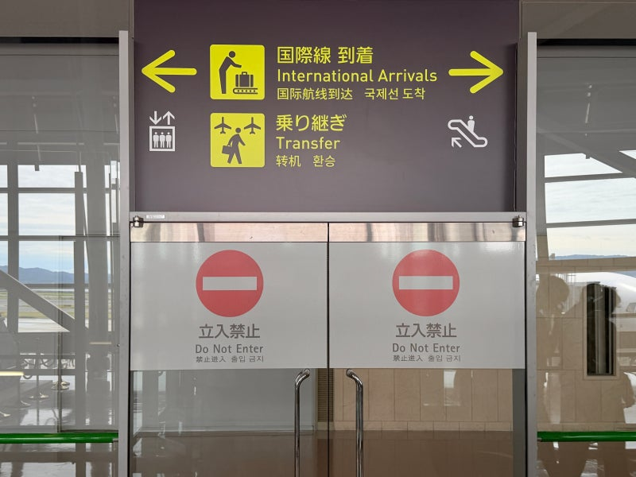
① 『国際線 到着 (국제선 도착)』 표지판 따라 이동
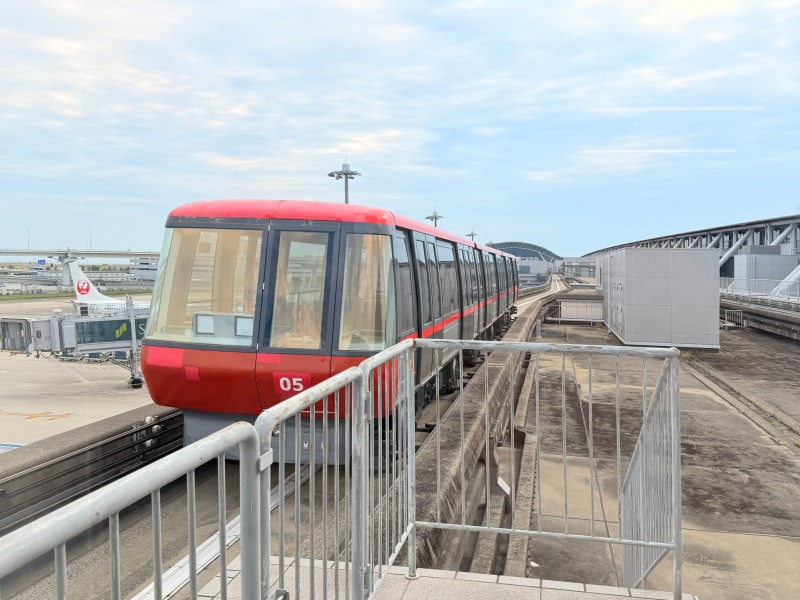
② 무인 셔틀트레인(윙셔틀)을 타고 입국장 본관으로 이동
표지판 확인: 노란색 글씨로 『国際線 到着 / International Arrivals / 국제선 도착』이라고 한국어가 함께 적혀 있어 길 잃을 염려가 없습니다.
무인 셔틀트레인 탑승: 제1터미널 탑승동에서 내리면 공항 내부 모노레일(셔틀트레인)을 한 번 탑니다. 1~2분마다 바로 오며, 약 1분 반 만에 입국심사장이 있는 본관 건물에 내려줍니다.
※ 참고: 제주항공·피치항공이 도착하는 제2터미널은 셔틀트레인 없이 걸어서 바로 입국심사장으로 이어집니다.
3
통합 키오스크에서 『비짓재팬웹 QR + 여권』 스캔 후 입국심사
간사이공항은 입국심사와 세관신고를 한 번에 처리하는 최신 『공동 키오스크』를 운영 중입니다.
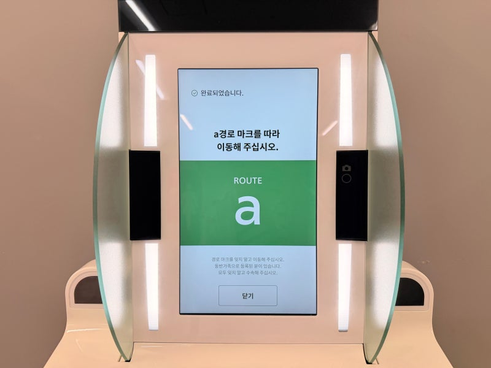
① 키오스크 스캔 완료 후 뜨는 경로 알파벳 (예: ROUTE a)② 화면에 뜬 알파벳(a·b·c·d) 색깔 표지판을 따라 이동
미리 준비할 것: 출국 전 등록해 둔 비짓재팬웹(Visit Japan Web) QR코드 화면(캡처본도 가능)과 여권(여권 커버는 미리 벗겨두세요)을 손에 준비합니다.
통합 키오스크 이용 순서 (한국어 음성·화면 지원):
기계에 여권 사진면과 비짓재팬웹 QR코드를 순서대로 스캔합니다.
양손 검지 지문 등록 후 카메라를 보고 얼굴 사진을 찍습니다.
완료되면 첫 번째 사진처럼 화면에 『a / b / c / d 경로 마크를 따라 이동해 주십시오』라고 알파벳이 크게 뜹니다.
입국심사 통과: 방금 화면에서 본 알파벳(예: 초록색 a, 분홍색 b, 주황색 c, 파란색 d) 바닥 선과 표지판을 따라 걸어가 심사관에게 여권만 보여주면 입국심사가 빠르게 끝납니다.
💡 꿀팁: 셔틀트레인에서 내리자마자 바로 앞 키오스크에 줄이 길다면, 당황하지 말고 조금만 더 안쪽으로 걸어가 보세요. 안쪽에도 똑같은 키오스크가 수십 대 있어서 훨씬 줄이 짧습니다!
4~6
수하물(캐리어) 찾기 ➔ 세관 전자게이트 통과 ➔ 1층 도착 로비 출구!
짐을 찾은 뒤 파란색 『출구(EXIT)』 바닥 표시만 따라 나오면 입국 완료입니다.
④ 전광판에서 항공편 번호 확인 후 캐리어 수령⑤ 비짓재팬 등록자는 파란색 a·b·c·d 전자신고 구역 통과
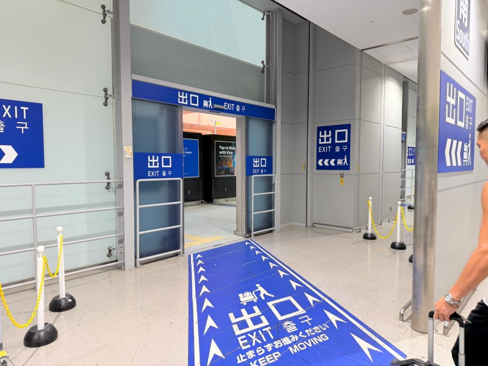
⑥ 파란색 『出口 EXIT 출구』를 지나면 1층 도착 로비!
Step 4. 수하물 찾기: 계단/에스컬레이터로 내려와 전광판에서 타고 온 비행기 편명(예: KE723, OZ112 등)이 적힌 벨트 번호를 확인하고 캐리어를 찾습니다.
Step 5. 세관 통과: 앞 단계 키오스크에서 이미 세관 신고까지 마쳤으므로, 종이 신고서를 쓰는 노란색 줄로 가지 마시고 파란색 『전자신고 에리어 (a·b·c·d)』 자동문으로 걸어가면 얼굴 인식으로 문이 바로 열립니다.
Step 6. 1층 도착 로비 진입: 바닥의 파란색 『出口 EXIT 출구』 화살표를 따라 자동문을 나오면 간사이공항 제1터미널 1층 도착 로비입니다.
갈림길
1층 도착 로비에 나오자마자 보이는 이 표지판에서 길을 고르세요!
버스와 기차(전철)는 타는 층이 다릅니다.
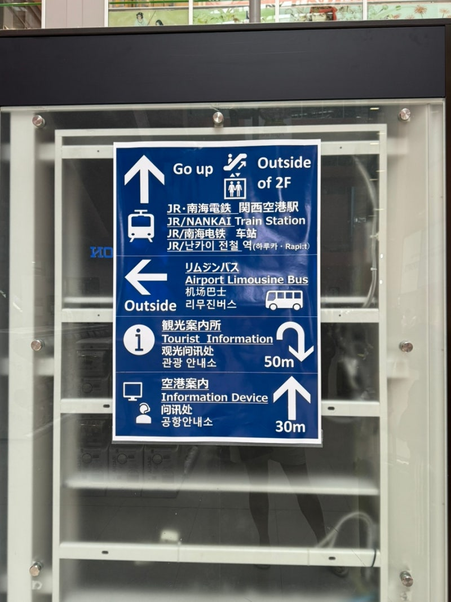
1층 출구 앞 파란 안내판
🚌 방법 1. 공항 리무진버스를 타실 분 (추천)
표지판의 『← Outside 리무진버스』 화살표대로 1층 그대로 건물 밖(야외)으로 나갑니다. 계단이나 에스컬레이터를 탈 필요가 전혀 없습니다!
🚅 방법 2·3. JR 하루카 / 간쿠쾌속 기차를 타실 분
표지판의 『↑ Go up Outside of 2F JR/난카이 전철역』 화살표대로 실내 에스컬레이터나 엘리베이터를 타고 2층으로 올라간 뒤 구름다리를 건넙니다.
ICOCA CARD · 오사카·교토 여행 필수 교통카드 (일본의 티머니)
💳 간사이공항에서 『이코카(ICOCA) 카드』 사는 법
제1터미널 2층 연결통로 ➔ 간사이공항역 발매기보증금 500엔 포함 (3,000엔권 추천)⚠️ 엔화 현금 지폐만 가능 (카드결제 불가)지하철·JR·한큐·편의점 모두 사용
이코카 1
어디서 사나요? 『2층 간사이공항역 파란색 발매기』 (리무진버스 탑승 시 동선 꿀팁!)
오사카 지하철·교토 한큐전철·편의점까지 동전 없이 '삑!' 찍고 타는 필수 선불 교통카드입니다 (1인 1장 필수).
① 1층 로비에서 2층으로 올라가 구름다리를 건너 『간사이공항역』 이동
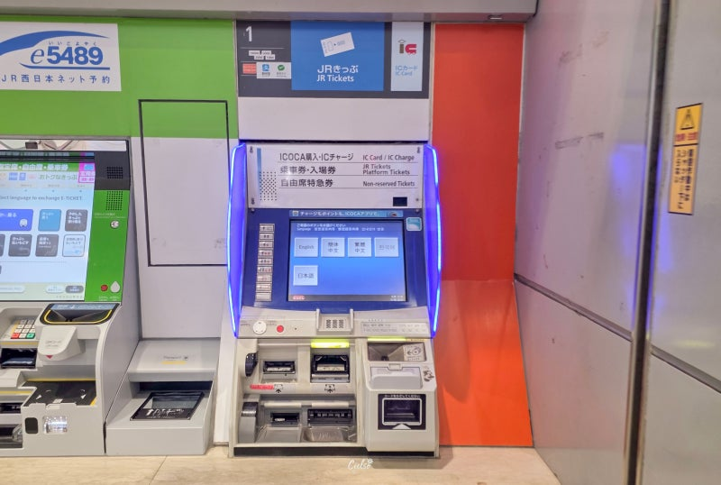
② 파란색 JR 개찰구 옆 『ICOCA購入・ICチャージ』 파란 테두리 발매기 찾기
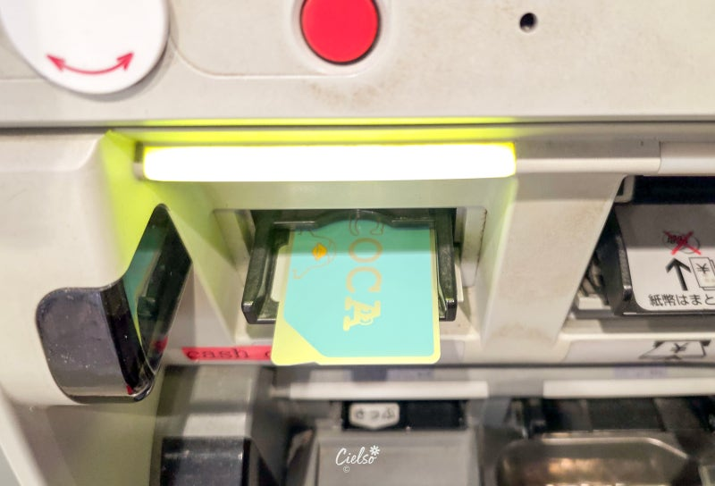
③ 기계에서 바로 나오는 민트색 실물 『ICOCA 교통카드』
간사이공항에서 사는 위치:
1층 도착 로비 안쪽 에스컬레이터/엘리베이터를 타고 2층으로 올라간 뒤, 구름다리(연결통로)를 건너 『간사이공항역(JR·난카이 전철역)』으로 갑니다.
파란색 JR 개찰구 오른쪽 매표기 줄에서 위쪽에 『ICOCA購入・ICチャージ (IC Card / IC Charge)』라고 적힌 파란색 테두리 일반 발매기(또는 맞은편 주황/분홍색 난카이 발매기) 앞에 섭니다.
※ 주의: 하루카 티켓을 교환하는 『초록색 지정석 발권기(Green vending machine)』는 줄이 매우 길고 일반 이코카 판매 버튼이 없는 기계가 있으니, 줄이 짧은 왼쪽 파란색 일반 발매기를 이용하세요!
🚌 잠깐! 공항 리무진버스를 타시는 부모님께 드리는 핵심 꿀팁 (동선 낭비 방지!)
• 공항 리무진버스는 1층 야외 5번 승차장에서 현금 발권기나 신용카드 터치로 바로 탈 수 있습니다.
• 따라서 리무진버스로 우메다에 가실 분들은 무거운 캐리어를 끌고 일부러 2층 기차역까지 올라갔다 내려오실 필요가 전혀 없습니다!
• 버스를 타고 우메다(숙소)에 도착하신 뒤, 숙소 근처 『지하철 우메다역 · 히가시우메다역 · 한큐 오사카우메다역 · JR 오사카역』 아무 개찰구 옆 발매기에서도 아래 방법과 똑같이 줄 안 서고 1분 만에 이코카 카드를 사실 수 있습니다!
이코카 2
기계 화면 그대로 따라 하는 『이코카 카드 구매 4단계』 & 충전·환불법
한국어 버튼이 완벽 지원되며, 반드시 『일본 엔화 현금 지폐(1,000엔·5,000엔·10,000엔권)』를 준비하세요!
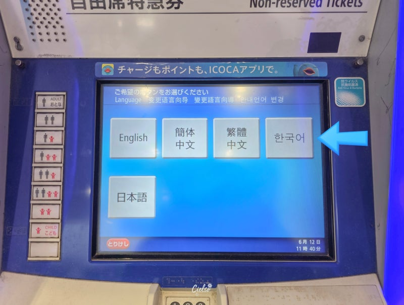
① 첫 화면 오른쪽 위 『한국어』 버튼 터치
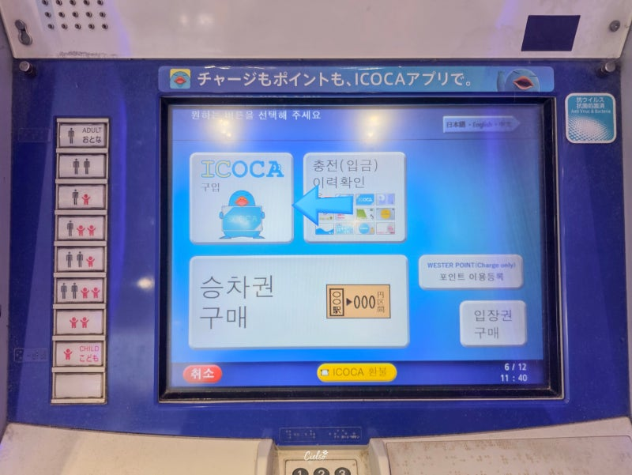
② 파란 오리 캐릭터가 그려진 왼쪽 『ICOCA 구입』 터치
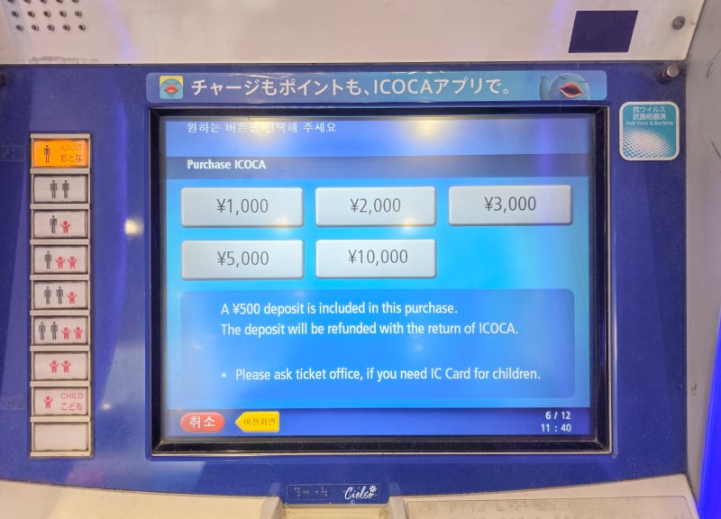
③ 금액 선택: 3박 4일 여행은 『¥3,000』 또는 『¥5,000』 추천!
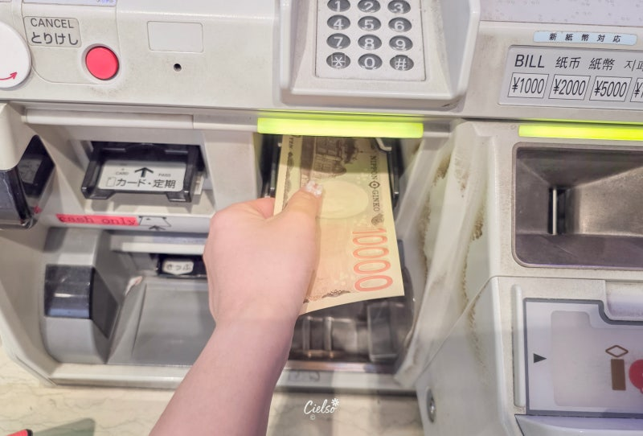
④ 깜빡이는 투입구에 엔화 지폐 투입 (1만 엔권도 거스름돈 나옴)
1단계 (한국어 선택): 기계 화면 오른쪽 위의 『한국어』 버튼을 누릅니다.
2단계 (ICOCA 구입 선택): 화면 왼쪽 위 파란 오리 캐릭터가 그려진 『ICOCA 구입』 버튼을 누릅니다.
3단계 (충전 금액 선택 — ¥3,000 추천!): 화면에 뜨는 금액(¥1,000 / ¥2,000 / ¥3,000 / ¥5,000 / ¥10,000) 중 하나를 누릅니다.
처음 카드를 살 때는 카드 보증금 500엔이 자동으로 포함됩니다. (예: 『¥3,000』 선택 시 ➔ 보증금 500엔 + 실제 사용 가능한 충전금 2,500엔)
오사카 지하철(1회 190~290엔)과 교토 한큐 왕복(820엔)을 고려하면 처음부터 1인당 『¥3,000』 또는 『¥5,000』으로 뽑으시는 것이 가장 편리합니다.
4단계 (현금 지폐 투입 & 카드 수령): 아래 초록색 불이 깜빡이는 지폐 투입구(BILL 지폐)에 엔화 지폐를 넣은 뒤 화면의 『영수증 있음 / 영수증 없음』을 누르면, 왼쪽 배출구로 민트색 ICOCA 카드와 거스름돈이 나옵니다! (※ 두 분이면 똑같은 순서로 한 장 더 뽑아 총 2장을 만드세요. 신용카드로는 구매할 수 없습니다.)
🔄 여행 중 잔액 부족 시 추가 충전(Charge)하는 법
개찰구를 찍고 지나갈 때마다 작은 화면에 남은 잔액이 숫자로 표시됩니다.
어느 역이든 개찰구 옆 발매기에서 『한국어』 ➔ 『충전(입금) 이력확인』을 누르고 카드를 넣은 뒤, 원하는 금액(¥1,000 / ¥2,000)을 누르고 현금을 넣으면 30초 만에 충전됩니다.
지하철역 외에도 세븐일레븐·패밀리마트·로손 편의점 계산대나 세븐은행 ATM에서도 현금 충전이 가능합니다!
💰 귀국 날 카드 반납(500엔 환불) vs 기념 소장
그냥 가져오시는 경우 (추천): 유효기간이 10년이므로 남은 잔액은 공항 편의점·자판기에서 간식 사 드시는 데 다 쓰시고, 카드는 한국에 가져오시면 다음 일본 여행(도쿄·후쿠오카·오사카 전국 호환) 때 그대로 쓰실 수 있습니다.
보증금 500엔 환불받는 경우: 잔액을 0엔으로 다 쓰신 뒤 간사이공항역 파란색 JR 발매기에서 『한국어』 ➔ 화면 맨 아래 노란색 『ICOCA 환불』 버튼을 누르고 카드를 넣으면 보증금 500엔 현금을 돌려줍니다. (※ 잔액이 남아 있으면 수수료 220엔이 차감됩니다.)
캐리어 맡기기: 직원이 캐리어에 번호표를 달아 트렁크에 실어주고 보관증(짐표)을 손에 쥐여줍니다. 내릴 때 이 표를 보여줘야 가방을 찾으니 주머니에 잘 챙기세요!
참고
돌아오는 날: 우메다에서 간사이공항 가는 리무진버스 타는 곳
여행 마지막 날 공항으로 돌아갈 때는 『한큐 삼번가 (오사카역 앞)』 정류장에서 탑승합니다.
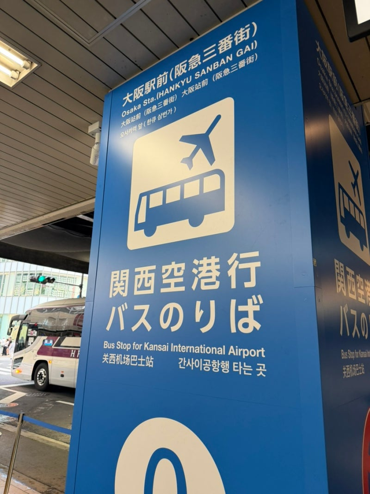
① 파란 기둥 『오사카역 앞(한큐 삼번가) 간사이공항행 타는 곳』② 짐 맡길 때 1터미널/2터미널 구분 안내판
타는 위치: 구글 지도에서 『한큐 산반가이 고속버스터미널』 또는 『알펜 오사카(Alpen TOKYO/OSAKA 우메다)』 맞은편 1층으로 오시면 첫 번째 사진 같은 파란색 큰 기둥(간사이공항행 타는 곳)이 있습니다.
왕복권을 끊으셨다면 남겨둔 티켓을 내고 바로 줄 서시면 되고, 편도만 끊으셨다면 정류장 안 매표기에서 표를 사거나 신용카드 터치/ICOCA로 바로 탑승합니다.
짐을 맡길 때 직원이 터미널을 물어보면 제주항공·피치항공만 "제2터미널", 나머지 모든 항공사(대한항공·아시아나·진에어·티웨이 등)는 "제1터미널"이라고 말씀하세요.
METHOD 2 · 정체 없이 47분 만에 오사카역 직통
🚅 방법 2: JR 특급열차 『하루카 (HARUKA)』 타는 법
제1터미널 2층 연결통로 ➔ 간사이공항역파란색 JR 개찰구 ➔ 4번 승강장외국인 할인 편도 1,900엔약 47분 소요
하루카 1
1층 로비에서 『2층』으로 올라가 구름다리를 건너 『간사이공항역』으로 이동
건물 밖으로 나가지 말고 실내 에스컬레이터나 엘리베이터로 2층에 올라갑니다.
① 2층 구름다리(연결통로)를 건너면 간사이공항역 도착
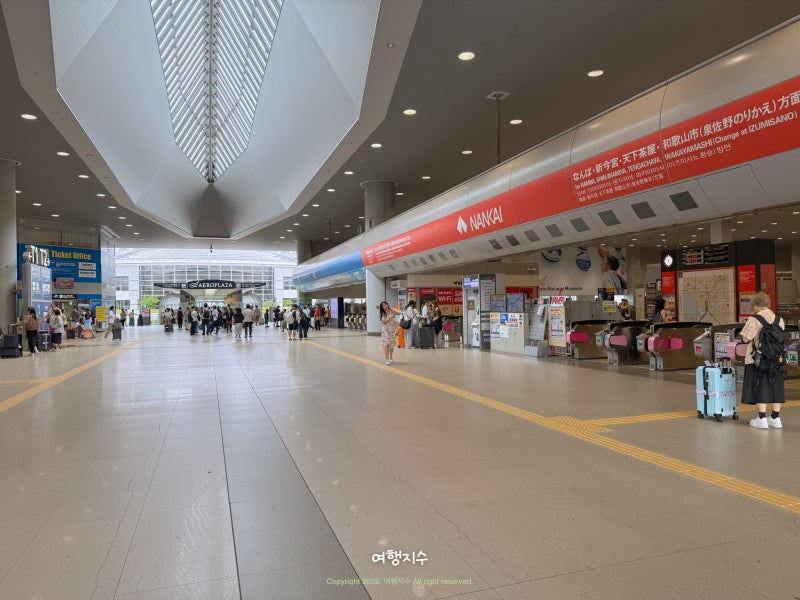
② 역 광장: 파란색(JR)과 빨간색(난카이)이 마주 보고 있음
1층 도착 로비 안쪽의 에스컬레이터/엘리베이터를 타고 2층으로 올라간 뒤, 『Railways (철도 / JR·Nankai)』 표지판을 따라 외부 연결다리를 약 1~2분 걸어 건넙니다.
다리를 건너면 넓은 역 광장이 나옵니다. 여기서 색깔 법칙 하나만 기억하세요!
🔵 파란색 간판 (JR 서일본):우메다(오사카역)·신오사카·교토 가는 『특급 하루카』 및 『간쿠쾌속』 ➔ 여기로 가세요!
🔴 빨간/주황색 간판 (NANKAI 난카이 전철): 난바역 가는 『라피트』 (우메다에 가지 않으니 헷갈리지 마세요!)
하루카 2
하루카 티켓 준비: 『스마트폰 QR 바로 입장』 vs 『초록색 기계 실물 발권』
출국 전 한국 여행 플랫폼(클룩·마이리얼트립·트립닷컴 등)에서 미리 할인권(1,900엔, 약 1.6만~1.8만 원)을 사두는 것이 가장 저렴합니다.
① 파란색 『JR Ticket Office』 매표 창구② 『Green vending machine (초록색 발권기)』에서 바우처 교환
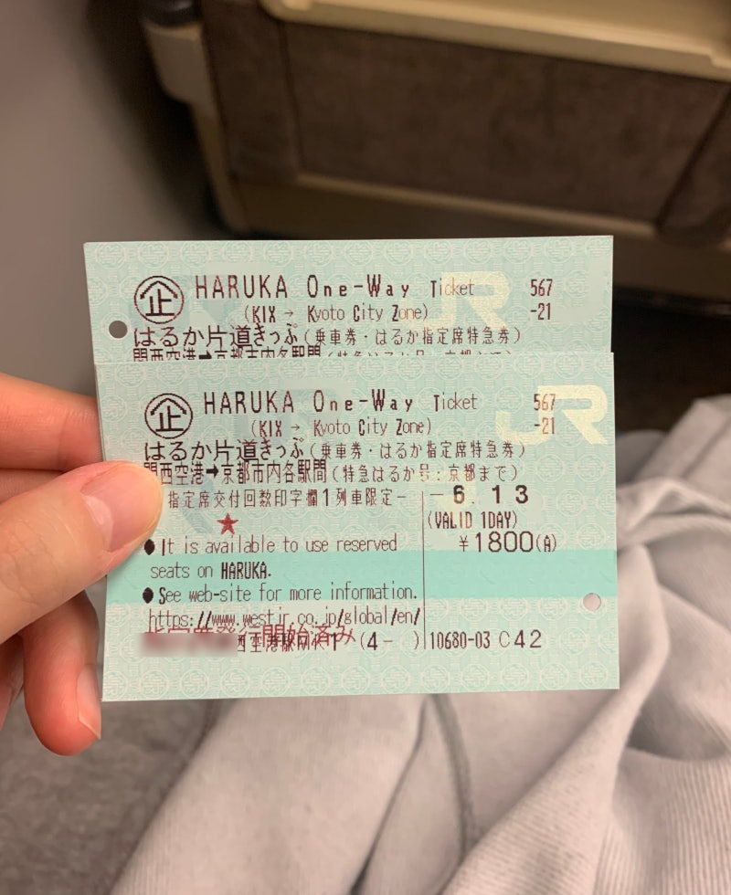
③ 실물 교환 시 출력되는 하루카 종이 티켓
방식 A. 스마트폰 QR 티켓 (WEST QR · 가장 편리!)
한국에서 예매할 때 도착역을 『오사카역(Osaka)』으로 선택해 구매합니다. (※ 신오사카역과 헷갈리지 마세요!)
바우처 링크(WEST QR)에 접속해 티켓을 등록하고 원하는 시간대의 지정석 좌석을 미리 지정합니다.
공항역에 도착해 개찰구에 들어가기 직전 『사용개시(Use Ticket)』 버튼을 누르면 움직이는 QR코드가 뜹니다. (발권기 줄 설 필요 없이 바로 개찰구로!)
방식 B. 실물 티켓 교환권 / 현장 구매
실물 교환형 바우처를 사셨다면 파란색 JR 매표소 옆 『초록색 발권기(Green vending machine)』 또는 개찰구 옆 『하루카 전용 흰색 발권기』로 갑니다.
화면에서 『한국어』 선택 ➔ 『QR코드 판독』 ➔ 바우처 QR 스캔 및 여권 스캔 ➔ 지정석/자유석 종이 티켓 출력!
기계 조작이 어려우시면 첫 번째 사진의 파란색 『JR Ticket Office』 유인 창구 직원에게 여권과 바우처를 보여주시면 발권해 줍니다.
⚠️ WEST QR 이용 시 꼭 주의할 점 2가지:
① 『사용개시』 버튼은 반드시 타는 날 개찰구 앞에서 누르세요. 또한 지정석을 예약했다면 열차 출발 최소 3분 전까지 사용개시를 눌러야 좌석이 취소되지 않습니다.
② 탑승용 QR코드는 보안을 위해 실시간으로 움직이므로 화면 캡처본으로는 개찰구를 통과할 수 없습니다. 실제 인터넷 창을 띄워서 찍으세요.
하루카 3
『파란색 JR 개찰구』 통과 ➔ 『4번 승강장』으로 내려가 하루카 탑승!
하루카는 무조건 4번 승강장에서 출발하며, 하얀색 헬로키티 기차입니다.
① 파란색 『JR Line GATE B』 개찰구 통과
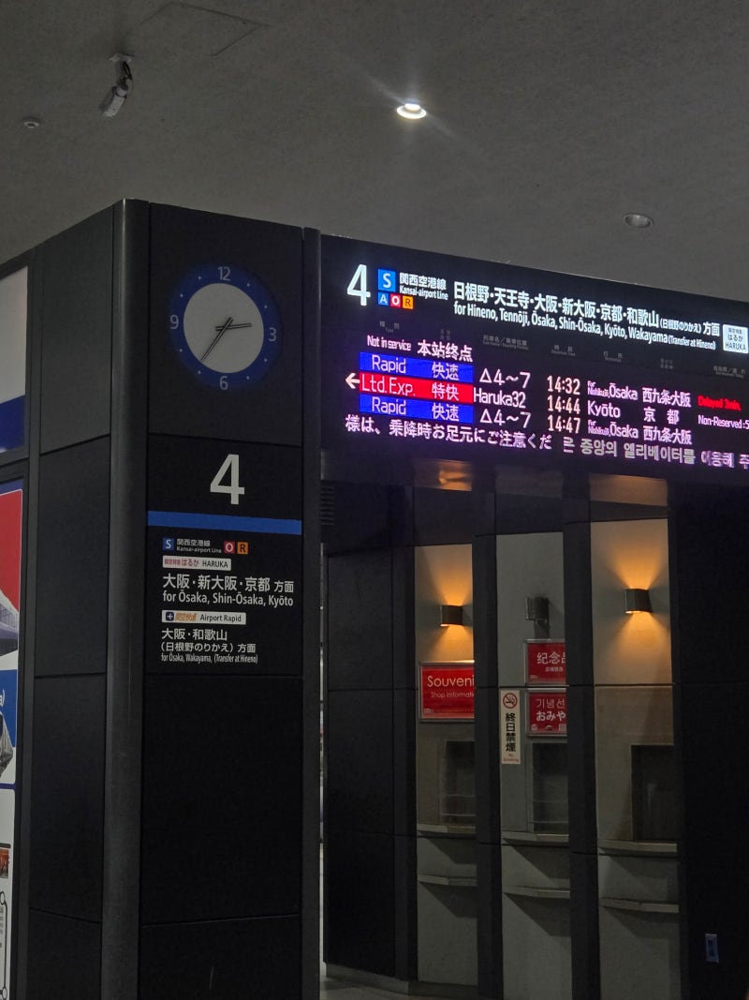
② 『4번 승강장』 전광판의 빨간 글씨 『Ltd. Exp. 특급 Haruka』 확인
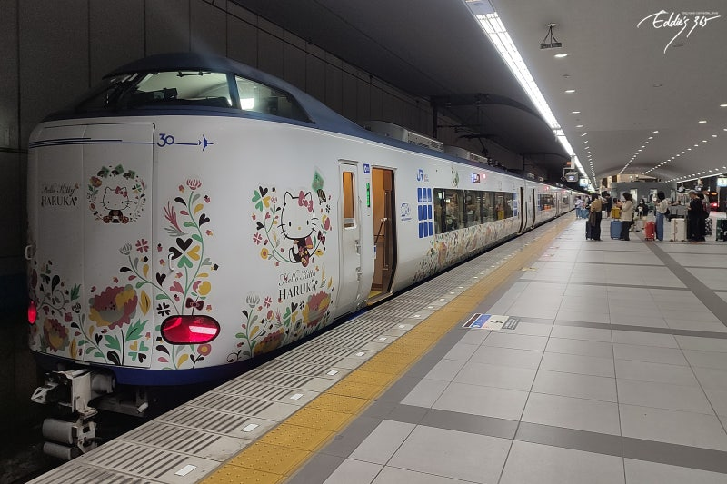
③ 4번 승강장에 서 있는 하얀색 헬로키티 하루카 열차
개찰구 통과 방법:
QR 티켓: 개찰구 기둥에 달린 빨간색 QR 스캐너에 휴대폰 화면을 대고 통과합니다.
종이 티켓: 개찰구 앞 투입구에 표를 넣으면 반대쪽 위로 표가 다시 튀어나옵니다. 나오는 표를 꼭 다시 뽑아서 챙기세요! (오사카역에서 내릴 때 다시 넣어야 문이 열립니다.)
4번 승강장 이동: 개찰구를 지나 에스컬레이터나 엘리베이터를 타고 『4번 승강장 (오사카·신오사카·교토 방면)』으로 내려갑니다.
호차 확인: 지정석을 예약하셨다면 티켓(또는 QR 화면)에 적힌 호차 번호(Car No.)와 좌석 번호를 보고 타시고, 자유석 티켓이라면 자유석 칸(보통 5~7호차, 전광판에 Non-Reserved 표시)에 빈자리에 앉으시면 됩니다.
하루카 4
캐리어 보관대에 짐 넣기 ➔ 47분 뒤 『오사카역 (우메키타 지하 승강장)』 하차
『덴노지역』 다음 역인 『오사카역(Osaka)』에서 내립니다. (그다음 역인 신오사카역까지 가지 않도록 주의!)
① 각 객차 출입문 옆에 있는 대형 캐리어 전용 보관대② 넓고 쾌적한 하루카 특급열차 좌석
캐리어 보관: 열차에 타자마자 출입문 양옆에 있는 2단 수하물 보관대에 큰 캐리어를 넣어두고 자리로 가시면 편합니다.
오사카역 하차 준비: 간사이공항역을 출발해 『덴노지(天王寺)역』에 한 번 정차한 뒤, 그다음 역인 『오사카(大阪)역』에서 내립니다. (※ 내리실 때 선반이나 수하물 보관대에 둔 캐리어를 잊지 말고 챙기세요!)
하루카 5
오사카역(우메키타 지하 승강장) 하차 후 ➔ 『이비스 오사카 우메다』 숙소까지 가는 법
지하 승강장에서 바로 밖으로 나가지 마시고, 개찰구 안 연결통로로 1층 『중앙개찰구(中央口)』까지 올라온 뒤 지하상가(화이티 우메다 7-72 출구)로 이동하는 것이 가장 쉽습니다!
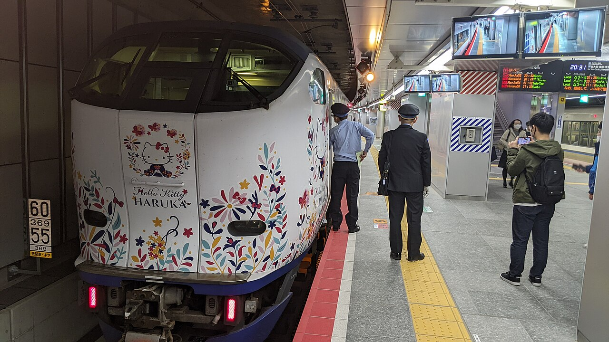
① 지하 승강장(21~24번) 하차 후 『西口·中央口(중앙출구) 연락통로』 에스컬레이터 탑승
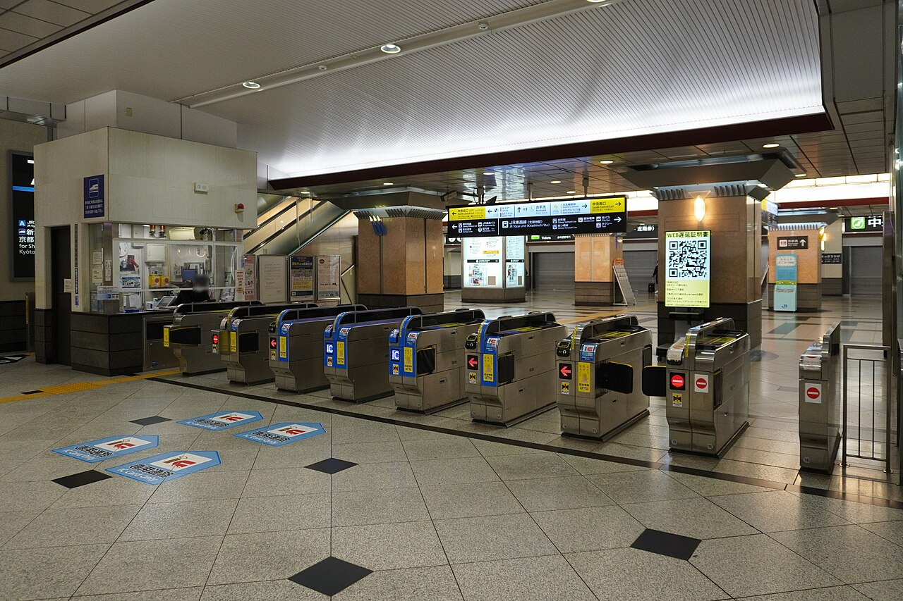
② 1층 『中央口(중앙개찰구)』로 나와 오른쪽 『中央南口(남출구)·지하상가』 방향 이동
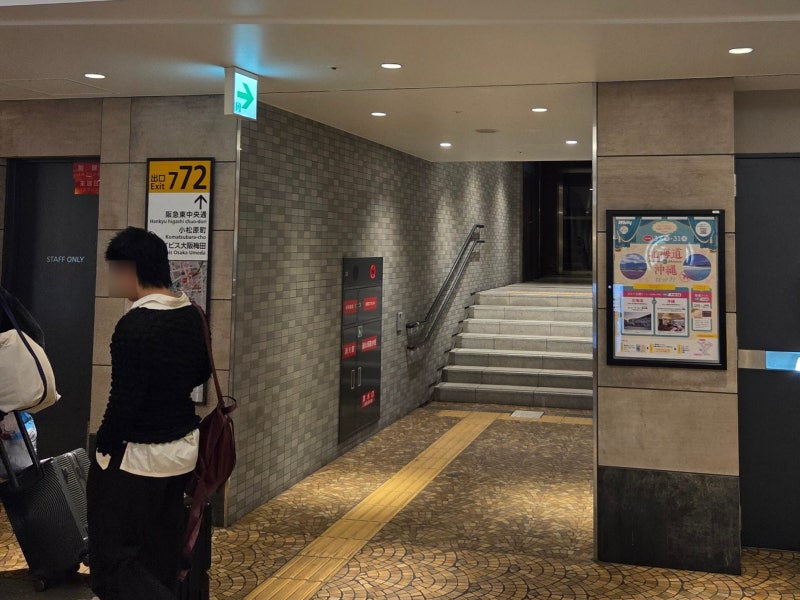
③ 지하 1층 『화이티 우메다』 East Mall ➔ 『Exit 7-72(ibis 전용 엘리베이터)』로 호텔 1층 직결!
1단계 (핵심 꿀팁 — 우메키타 지하출구로 바로 나가지 마세요!):
하루카가 도착하는 곳은 JR 오사카역 북서쪽 지하에 새로 생긴 『우메키타 지하 승강장(21~24번 홈)』입니다.
여기서 바로 앞 지하 개찰구(`うめきた地下口`)로 나가버리면 숙소 반대편(그랑프론트 북관/남관 쪽)이라 캐리어를 끌고 멀리 돌아가야 합니다.
2단계 (개찰구 안 연결통로 ➔ 1층 『중앙개찰구 中央口』로 나오기):
승강장에서 내린 뒤 머리 위 노란색/흰색 안내판의 『西口(서출구) · 中央口(중앙출구) · 乗換(환승) 연락통로』 화살표를 따라 에스컬레이터(또는 엘리베이터)를 타고 지상 1층으로 올라갑니다.
통로를 따라 걸어가 1층 『中央口 (중앙개찰구 / Central Gate)』에서 QR코드(또는 종이 티켓)를 찍고 개찰구 밖으로 나옵니다.
3단계 (코스 A — 지하상가 엘리베이터 직결 코스, 캐리어 이동·우천 시 강추!):
중앙개찰구를 나오자마자 오른쪽(『中央南口 중앙남출구 · 地下鉄御堂筋線 지하철 미도스지선 · 阪急電車 한큐전철』 방향)으로 1~2분 걸어 내려가 지하 1층으로 가는 에스컬레이터/엘리베이터를 탑니다.
지하 1층에서 지하철 우메다역 개찰구 옆을 지나면 바로 『화이티 우메다 (Whity Umeda)』 지하상가로 이어집니다.
천장 이정표의 『East Mall (이스트몰)』 방향을 따라 약 4분 직진하면 노란색 『出口 Exit 7-72 (イビス大阪梅田 / ibis Osaka Umeda)』 표지판이 나옵니다.
7-72 출구 계단으로 올라가지 마시고, 계단 바로 오른쪽 벽면 자동문 안 『ibis 전용 엘리베이터(B1➔1F)』를 타면 계단 하나 없이 호텔 1층 정문 앞으로 바로 올라갑니다!
4단계 (코스 B — 큰길 따라 걷는 지상 평지 코스):
1층 중앙개찰구에서 오른쪽 남출구(또는 동쪽 `미도스지 개찰구 御堂筋口`)로 나가 건물 밖 횡단보도를 건넙니다.
한큐백화점과 빨간 대관람차 건물(HEP FIVE) 사이 큰길(오우기마치도리)을 따라 동쪽으로 약 5분 직진하면 오른쪽에 검은색 외벽의 빨간 『ibis』 간판이 한눈에 보입니다.
귀국 참고
돌아오는 날: 숙소(이비스 우메다) ➔ JR 오사카역에서 『하루카』 타고 간사이공항 가는 법
귀국 날 하루카는 JR 오사카역 지하 『우메키타 지하 승강장 21번 홈』에서 출발합니다. 1층 개찰구에서 지하 승강장까지 걸어서 5~7분 걸리므로 열차 출발 20분 전에는 역에 도착하세요!
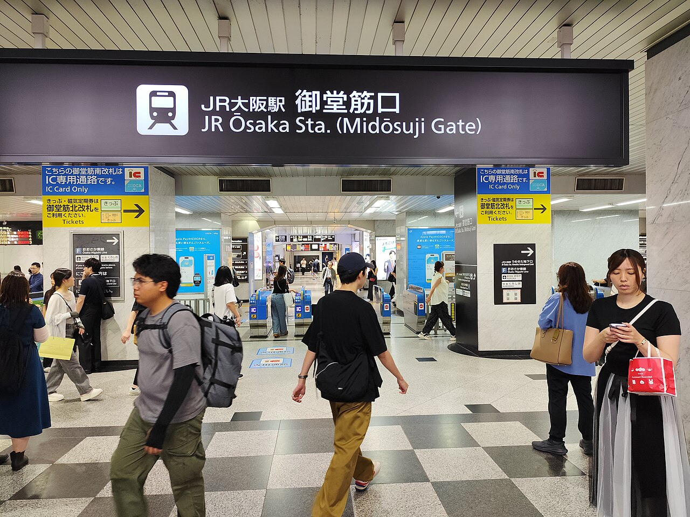
① JR 오사카역 도착 후 기둥의 검은색 『うめきた地下口 · 関空特急 はるか(하루카)』 안내판 확인
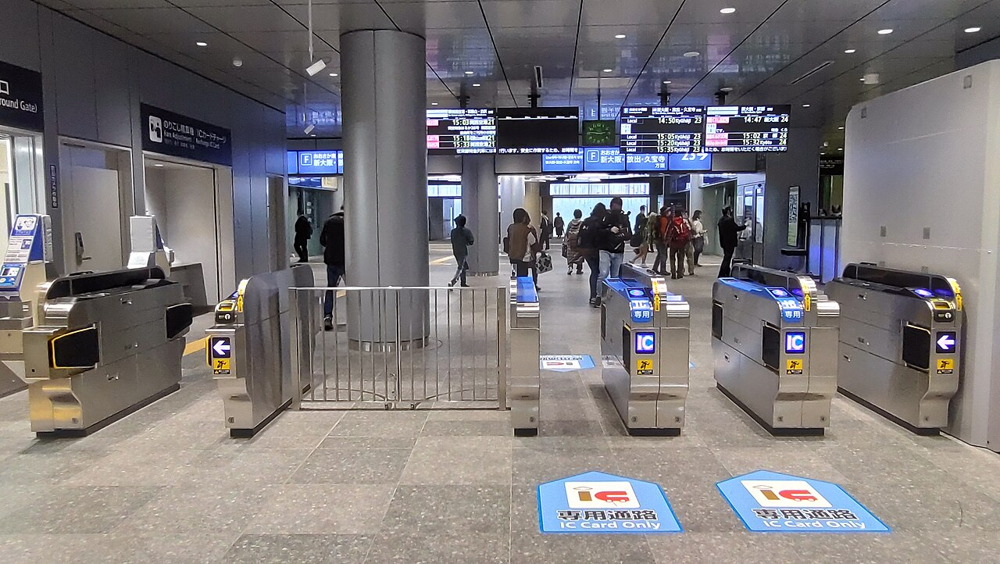
② 개찰구 입장 후 전광판에서 빨간색 『特急はるか 関西空港 [21번 승강장]』 확인③ 지하 『21번 승강장』에서 헬로키티 하루카 탑승 (약 47분 뒤 간사이공항 도착)
1단계 (숙소 출발 ➔ JR 오사카역 이동):
호텔 정문 옆 7-72 출구 엘리베이터를 타고 지하상가(화이티 우메다)를 통해 오시거나, 지상 큰길(햅파이브·한큐백화점 방향)을 따라 걸어서 『JR 오사카역』으로 이동합니다 (도보 약 6~7분).
⚠️ 시간 여유 필수: JR 오사카역 1층 개찰구에서 지하 21번 승강장까지 역 내부 이동 시간이 약 5~7분 걸리므로, 예매하신 열차 출발 시각보다 최소 20분 전에는 역에 도착하시는 것이 안전합니다.
2단계 (귀국편 하루카 티켓 준비):
WEST QR 스마트폰 티켓: 한국에서 미리 사둔 귀국편(`오사카 ➔ 간사이공항`) 티켓의 『사용개시(Use Ticket)』 버튼을 개찰구 들어가기 직전에 눌러 QR코드를 띄웁니다. (※ 지정석 예약 시 출발 3분 전까지 사용개시 필수!)
실물 티켓 발권 시: JR 오사카역 1층 중앙개찰구(`中央口`) 옆 『초록색 발권기(みどりの券売機)』에서 한국어 선택 후 바우처 QR/여권을 스캔해 종이 티켓을 뽑거나 현장에서 구매합니다.
3단계 (개찰구 통과 후 『우메키타 지하 승강장 21번 홈』 찾아가기):
1층 『중앙개찰구(中央口)』 또는 『서출구(西口)』로 들어가는 경우: 개찰구 QR 리더기(또는 표 투입구)를 통과한 뒤, 바닥과 천장의 파란/주황색 『うめきた地下ホーム (21~24番のりば) · 関西空港 (はるか)』 화살표를 따라 연결통로와 에스컬레이터/엘리베이터를 타고 지하 승강장으로 내려갑니다.
『우메키타 지하입구(うめきた地下口)』로 바로 들어가는 경우: 그랑프론트 오사카 남관/이노게이트 오사카 지하 1층과 연결된 `우메키타 지하개찰구`로 들어가면 바로 아래가 21~24번 승강장입니다.
4단계 (지하 『21번 승강장』에서 탑승 ➔ 간사이공항 하차):
간사이공항행 하루카는 무조건 지하 『21번 승강장(21番のりば)』에서 출발합니다.
전광판의 『特急 はるか 関西空港 (for Kansai-Airport)』를 확인하고 탑승하시면 약 47분 뒤 간사이공항역(2층)에 도착합니다. 내리셔서 구름다리를 건너 제1터미널 4층 국제선 출국장(제주·피치항공은 1층 에어로플라자에서 제2터미널 무료 셔틀버스 탑승)으로 올라가시면 됩니다!
METHOD 3 · 예매 없이 교통카드로 타는 가성비 전철
🚃 방법 3: JR 『간쿠쾌속 (간사이공항 쾌속)』 타는 법
파란색 JR 개찰구 ➔ 3번 승강장편도 1,180엔 (ICOCA 교통카드 태그 가능)약 65~70분 소요반드시 1~4호차 탑승
간쿠 1
간사이공항역 파란색 JR 개찰구 ➔ 『3번 승강장』에서 은색 열차 탑승 (1~4호차 필수!)
사전 예약 없이 교통카드(ICOCA 등)를 찍거나 파란색 발매기에서 1,180엔 표를 사서 바로 탈 수 있는 일반 급행열차입니다.
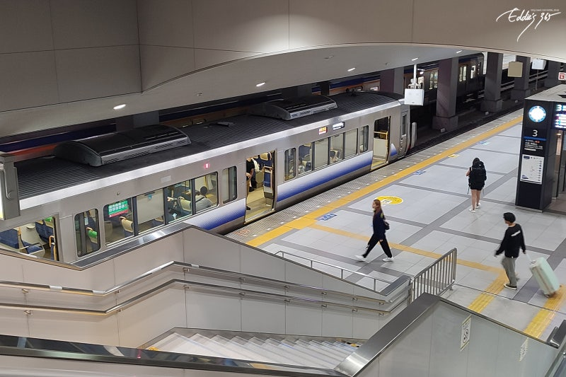
① 파란색 JR 개찰구 통과 후 『3번 승강장』으로 이동
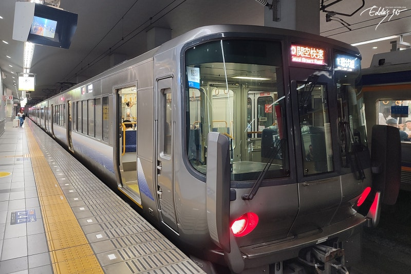
② 주황/파란 띠가 있는 은색 열차 『関空快速(간쿠쾌속)』③ 열차 내부 (마주 보는 박스형 좌석, 캐리어는 직접 잡고 탑승)
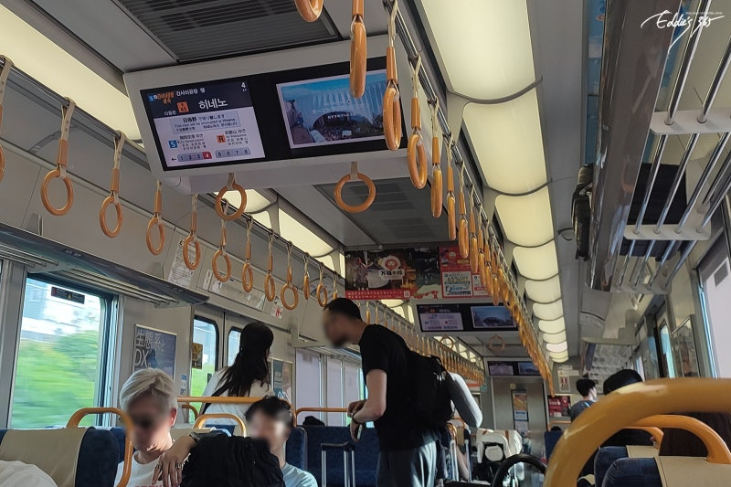
④ 중요! 중간 『히네노역』에서 1~4호차와 5~8호차가 분리됨
타는 곳: 하루카와 똑같이 2층 간사이공항역 파란색 JR 개찰구로 들어가되, 하루카(4번 승강장) 옆인 『3번 승강장』으로 내려갑니다. (간혹 4번에서 출발할 때도 있으니 전광판의 파란색 『Rapid 快速 大阪方面(오사카 방면)』을 확인하세요.)
장점: 요금이 1,180엔으로 가장 저렴하고, 오사카역 지하가 아닌 JR 오사카역 지상 승강장(2층)에 도착해 역 밖으로 나오기가 오히려 단순합니다.
🚨 절대 잊지 말아야 할 주의사항 — 무조건 『1~4호차』에 타세요!
간쿠쾌속 열차는 총 8칸으로 달리다가 중간 역인 『히네노(日根野)역』에서 앞 4칸(1~4호차)과 뒤 4칸(5~8호차)이 분리됩니다!
열차 내부 모니터(네 번째 사진)와 승강장 바닥에 한국어로 『1·2·3·4호차 = 간사이공항/오사카』라고 적혀 있으니 반드시 1~4호차인지 확인하고 타세요!
간쿠 2
오사카역(지상 승강장) 하차 후 ➔ 『이비스 오사카 우메다』 숙소까지 가는 법
간쿠쾌속은 JR 오사카역 지상 2층 승강장에 바로 도착하므로, 에스컬레이터로 한 층만 내려오면 바로 1층 개찰구(미도스지 개찰구 / 중앙개찰구)입니다!
① 지상 승강장에서 에스컬레이터로 1층에 내려와 『御堂筋口(미도스지 개찰구)』 또는 『中央口(중앙개찰구)』로 나오기② 지하 1층 『화이티 우메다(Whity Umeda)』 진입 ➔ East Mall 끝 『Exit 7-72(ibis)』 표지판 찾기
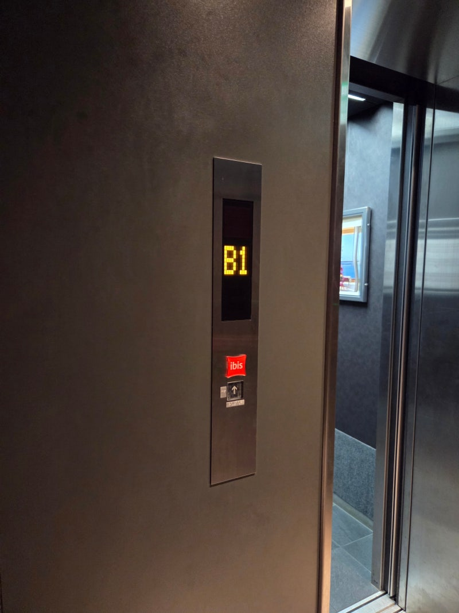
③ 7-72 출구 계단 오른쪽 『ibis 전용 엘리베이터(B1➔1F)』를 타면 호텔 1층 로비 직결!
1단계 (지상 승강장 하차 ➔ 1층 개찰구로 내려오기):
간쿠쾌속은 JR 오사카역 지상 2층 『2번 승강장(오사카 순환선 홈)』에 정차합니다.
열차에서 내려 승강장 계단/에스컬레이터/엘리베이터를 타고 한 층만 내려오면 바로 1층 『御堂筋口 (미도스지 개찰구 / Midosuji Gate)』 또는 『中央口 (중앙개찰구 / Central Gate)』입니다.
개찰구 파란색 패드에 ICOCA 카드를 찍거나(또는 종이 표를 넣고) 밖으로 나옵니다.
2단계 (코스 A — 지하상가 엘리베이터 직결 코스, 캐리어 이동·비 올 때 강추!):
1층 `미도스지 개찰구(御堂筋口)`로 나오면 바로 정면/오른쪽에 지하 1층으로 내려가는 에스컬레이터와 엘리베이터가 있습니다 (`중앙개찰구`로 나왔다면 오른쪽 `중앙남출구` 방향으로 이동).
지하 1층으로 내려가 지하철 미도스지선 우메다역 남쪽 개찰구 옆을 지나면 바로 『화이티 우메다 (Whity Umeda)』 지하상가로 들어섭니다.
천장 이정표의 『East Mall (이스트몰)』 방향을 따라 약 4분 직진하면 노란색 『出口 Exit 7-72 (イビス大阪梅田 / ibis Osaka Umeda)』 표지판이 보입니다.
7-72 출구 계단 바로 오른쪽 벽면 자동문 안 『ibis 전용 엘리베이터(B1➔1F)』를 타면 계단 없이 호텔 1층 정문 앞으로 바로 올라갑니다!
3단계 (코스 B — 큰길 따라 걷는 지상 평지 코스, 도보 약 6~7분):
1층 `미도스지 개찰구(남쪽 출구)`로 나와 건물 밖 횡단보도를 건넌 뒤, 한큐백화점과 빨간 대관람차 건물(HEP FIVE) 사이 큰길(오우기마치도리)을 따라 동쪽으로 약 5분 직진하면 오른쪽에 검은 건물·빨간 『ibis』 간판이 바로 보입니다.
귀국 참고
돌아오는 날: 숙소(이비스 우메다) ➔ JR 오사카역에서 『간쿠쾌속』 타고 간사이공항 가는 법
간쿠쾌속은 1층 개찰구 바로 위 지상 『1번 승강장』에서 출발해 타기가 매우 간단합니다! 단, 오사카역 출발 시에는 반드시 앞쪽 『1~4호차』에 타셔야 간사이공항으로 갑니다!
① 이비스 호텔에서 도보 6분 ➔ JR 오사카역 1층 『御堂筋口(미도스지 개찰구)』에 ICOCA 터치 후 입장
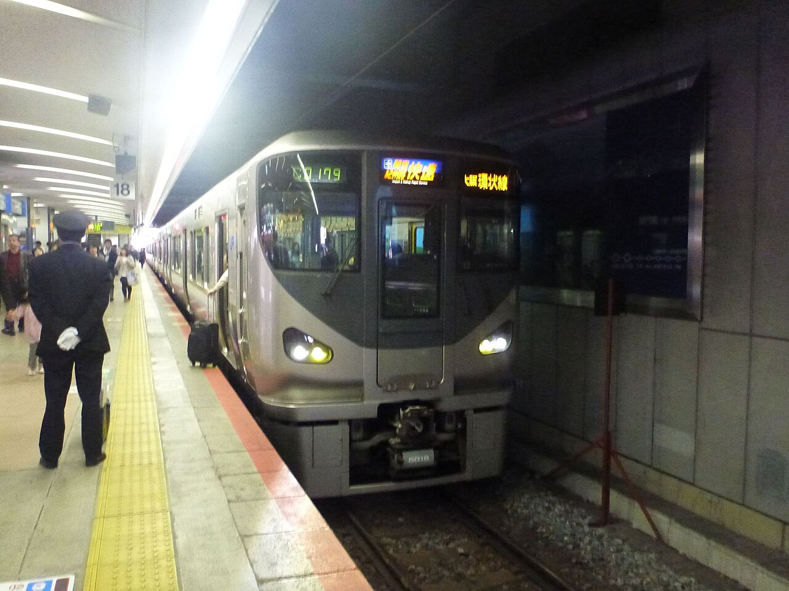
② 바로 앞 에스컬레이터로 지상 『1번 승강장』 이동 ➔ 비행기 마크가 있는 『関空/紀州路快速』 확인③ 🚨 필수! 오사카역 출발 시 앞쪽 『1~4호차』만 간사이공항행! (뒤쪽 5~8호차는 와카야마로 분리됨)
1단계 (숙소 출발 ➔ JR 오사카역 1층 개찰구 입장):
호텔 옆 `7-72 출구 엘리베이터`(화이티 우메다 지하상가 경유) 또는 지상 큰길을 따라 『JR 오사카역 1층 미도스지 개찰구(御堂筋口)』 또는 『중앙개찰구(中央口)』로 이동합니다 (도보 약 6분).
예매할 필요 없이 개찰구 파란색 패드에 실물 ICOCA 카드를 터치하고 바로 들어갑니다. (※ 카드에 잔액이 1,180엔 이상 남아 있는지 미리 확인하세요! 현금 이용 시 개찰구 옆 파란색 발매기에서 간사이공항행 1,180엔 표를 구매하면 됩니다.)
2단계 (지상 『1번 승강장』으로 올라가기):
하루카처럼 지하 깊은 곳(우메키타 홈)까지 걸어갈 필요가 전혀 없습니다!
1층 개찰구로 들어가자마자 바로 앞에 보이는 에스컬레이터(또는 엘리베이터)를 타고 한 층만 올라가 지상 『1번 승강장 (大阪環状線 · 関西空港/和歌山 방면)』으로 갑니다.
승강장 전광판에서 비행기 아이콘(✈️)이 표시된 『関空・紀州路快速 (간쿠·기슈지 쾌속) 関西空港・和歌山』 열차를 확인합니다 (약 15분 간격 운행, 공항까지 약 65~70분 소요).
3단계 (🚨 귀국길 가장 중요한 주의사항 — 무조건 앞쪽 『1~4호차』에 줄 서서 타세요!):
1번 승강장에 들어오는 간쿠·기슈지 쾌속 열차는 총 8칸으로 연결되어 달리다가, 중간 『히네노(日根野)역』에서 열차가 두 동강으로 분리됩니다!
앞쪽 4칸 (1·2·3·4호차): ✈️ 간사이공항(関西空港)으로 직행 ➔ 무조건 여기에 타세요!
뒤쪽 4칸 (5·6·7·8호차): ❌ 정반대 남쪽 끝 와카야마(和歌山)로 가버림 (실수로 5~8호차에 탔다면 히네노역 도착 전에 앞쪽 1~4호차로 옮겨 타셔야 합니다!)
1번 승강장 바닥과 기둥에 파란색 비행기 그림과 함께 『関西空港方面 1〜4号車 (간사이공항 방면 1~4호차)』 표시가 크게 붙어 있으니, 바닥의 1~4호차 안내선에서 줄을 서서 타시면 100% 안심입니다!
FINAL STEP · 우메다 도착 후 확정 숙소까지
🏨 우메다에서 『이비스 오사카 우메다』 찾아가는 법
확정 숙소: 이비스 오사카 우메다 (ibis Osaka Umeda)주소: 오사카시 기타구 고마쓰바라초 1-5화이티 우메다 지하상가 『7-72 출구』 엘리베이터 직결
동선 A
🚌 리무진버스 하차 시: 큰길 따라 걸어가는 지상 평지 코스 (도보 약 7~8분)
버스에서 내려 횡단보도와 큰길(오우기마치도리)만 따라 걸으면 빨간 『ibis』 간판이 바로 보입니다.
2단계 (구글 지도 검색): 스마트폰 구글 지도에 한글로 `이비스 오사카 우메다` 또는 영문 `ibis Osaka Umeda`를 입력합니다.
3단계 (직진 이동): 한큐백화점 옆 큰길로 나와 돈키호테 우메다 본점(노란색 관람차가 있는 건물)과 햅파이브(빨간 관람차 건물) 사이 큰길(오우기마치도리)을 따라 동쪽으로 약 4~5분 직진하면 오른쪽에 검은색 외벽의 빨간 『ibis』 간판이 한눈에 보입니다.
체크인 안내: 호텔 정문으로 들어가면 1층에 바로 프런트 로비가 있습니다. (체크인 14:00부터 / 일찍 도착 시 프런트에 무료로 캐리어 보관 가능)
⚠️ 구글 지도 검색 시 꼭 주의하세요!
근처 북동쪽에 이름이 비슷한 『이비스 버짓 오사카 우메다 (ibis budget)』라는 다른 등급의 호텔이 있습니다. 검색하실 때 반드시 『버짓(budget)』이 없는 『이비스 오사카 우메다 (고마쓰바라초 1-5)』인지 확인하세요!
동선 B
🚅 JR 기차 하차 시 / 비·추위 피할 때: 『화이티 우메다 7-72 출구』 엘리베이터 직결 코스
우메다 지하상가(Whity Umeda)에서 계단 하나 없이 호텔 전용 엘리베이터로 1층 로비까지 바로 올라갑니다!
① 지하상가 노란색 『Exit 7-72 (イビス大阪梅田 / ibis Osaka Umeda)』 표지판
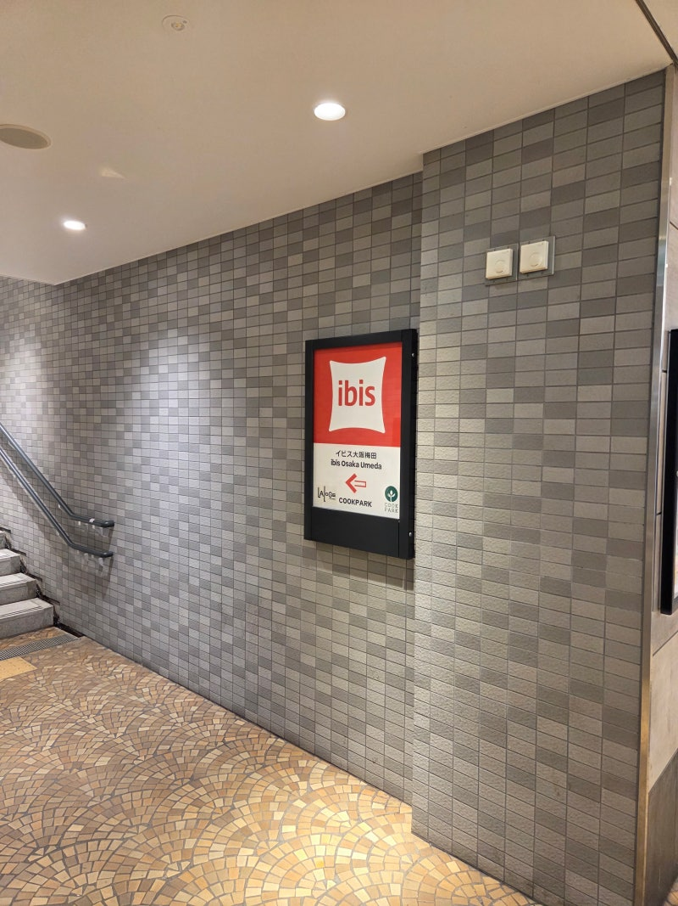
② 계단으로 올라가지 마시고 오른쪽 벽면 『ibis ←』 화살표 확인!③ 오른쪽 문 안 『ibis 전용 엘리베이터(B1)』를 타면 1층 호텔 입구 직결!
1단계 (화이티 우메다 진입): JR 오사카역(중앙개찰구/남쪽출구) 또는 지하철 미도스지선 우메다역에서 지하로 내려와 『화이티 우메다 (Whity Umeda)』 지하상가로 들어갑니다.
2단계 (East Mall ➔ 7-72 출구 이동): 천장 이정표에서 『East Mall (이스트몰)』 방향을 따라 끝까지 걸어가면 첫 번째 사진처럼 노란색 『出口 Exit 7-72 (ibis Osaka Umeda)』 표지판이 나옵니다.
3단계 (전용 엘리베이터 탑승 — 핵심 꿀팁!): 7-72 출구 통로로 들어서면 정면에 계단이 보입니다. 무거운 캐리어를 들고 계단으로 올라가지 마세요! 계단 바로 오른쪽 벽면에 빨간 『ibis』 안내판과 자동문이 있고, 그 안에 호텔 1층으로 바로 올라가는 전용 엘리베이터(B1➔1F)가 있습니다.
여행 중 활용 팁: 호텔에 머무시는 동안 난바·도톤보리(미도스지선 우메다역)나 오사카성(다니마치선 히가시우메다역)에 가실 때도 호텔 바로 옆 7-72 출구 엘리베이터를 타고 지하로 내려가면 날씨와 상관없이 쾌적하게 지하철을 타실 수 있습니다.
💡 부모님을 위한 3초 코스 선택 공식!
• ① 기온거리 · 청수사(기요미즈데라) · 니시키시장 · 아라시야마(대나무숲)에 가신다면?
👉 무조건 [방법 1: 한큐전철 교토선 (410엔)]을 타세요! 교토의 명동 격인 가와라마치역 한복판에 바로 내려줍니다. (청수사는 가와라마치역에서 택시 타시면 1,000~1,300엔에 언덕 입구까지 편하게 갑니다!)
• ② 교토역 · 교토타워 · 후시미이나리 타이샤(여우신사)에 먼저 가신다면?
👉 [방법 2: JR 교토선 신쾌속 (580엔)]을 타세요! 29분 만에 교토역에 도착하며, 바로 JR 나라선으로 갈아타서 5분이면 여우신사(이나리역) 코앞에 도착합니다.
💳 2. [출발 준비] 이비스 호텔에서 역 이동 & 안드로이드 교통카드
STEP 0-1
이비스 오사카 우메다 ➔ 한큐 오사카우메다역 / JR 오사카역 (도보 5~6분)
숙소인 이비스 오사카 우메다에서 두 역 모두 걸어서 5~6분이면 도착합니다.
지상으로 걸어갈 때 (날씨 좋을 때 추천): 호텔 1층 정문에서 오른쪽으로 나와 큰길 신호등 하나를 건넌 뒤, 빨간 대관람차가 있는 HEP FIVE(헵파이브) 옆 골목 아케이드로 직진하면 바로 한큐 오사카우메다역입니다!
지하상가(화이티 우메다)로 갈 때: 호텔 지하 1층 연결문(7-72번 출구)으로 나와 천장의 阪急電車 Hankyu Line 또는 JR線 JR Line 화살표만 따라 걸으시면 됩니다.
▲ 우메다 역내 천장의 [阪急電車 Hankyu Line] 표지판만 따라가세요
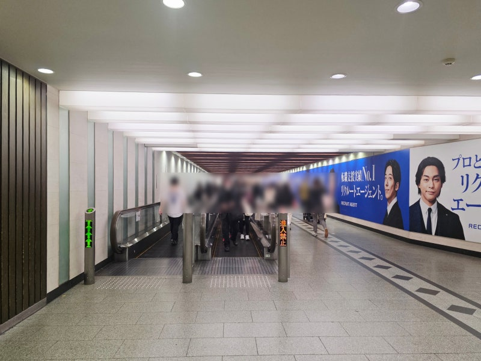
▲ 한큐백화점 옆 긴 무빙워크를 지나 에스컬레이터로 올라가면 한큐 개찰구!
STEP 0-2
갤럭시(안드로이드) 유저 부모님 전용! 개찰구 찍는 법 구분하기
아이폰과 달리 안드로이드(갤럭시) 스마트폰은 모바일 파스모/스이카가 되지 않습니다. 대신 아래 2가지 카드 중 하나를 챙기시면 종이표를 매번 안 사도 되어 정말 편합니다!
① 실물 이코카(ICOCA) 교통카드 (가장 만능 ⭐): 한큐전철·JR·오사카 지하철·교토 시내버스·편의점까지 일본 모든 대중교통 100% 통과! 개찰구의 파란색 IC 패드에 톡 찍으세요.
② 한국 트래블카드 / 비자·마스터 신용카드 터치 (한큐전철 ⭕ / JR ❌):한큐전철과 오사카 지하철은 한국 트래블월렛·트래블로그·신용카드를 그대로 찍고 탈 수 있습니다! 단, 와이파이 모양(컨택리스) 전용 은색 단말기가 달린 개찰구(보통 맨 끝 쪽 1~2개)에 찍으셔야 합니다.
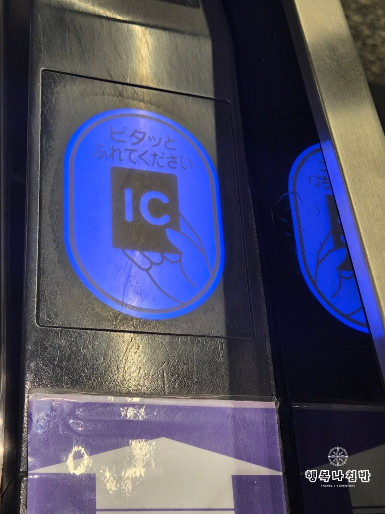
▲ 파란색 [IC] 패드: 실물 이코카(ICOCA) 교통카드를 찍는 곳 (신용카드 불가)
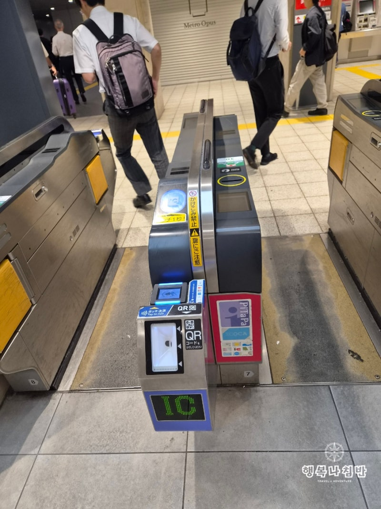
▲ 앞쪽에 은색 리더기가 달린 개찰구: 트래블카드·신용카드 터치 결제 가능!
🚃 3. [방법 1] 한큐전철 교토선 타고 가는 법 (부모님 추천 1순위 ⭐)
기온거리 · 청수사 · 니시키시장(교토 가와라마치역)이나 아라시야마 대나무숲(한큐 아라시야마역)에 가실 때 가장 편하고 저렴한(편도 410엔) 노선입니다.
한큐 1단계
한큐 오사카우메다역 개찰구 통과 & [1·2·3호 선 교토선] 찾기
한큐 오사카우메다역은 2층(중앙개찰구)과 3층(3층개찰구)에 큰 개찰구가 있습니다.
이코카(ICOCA) 또는 트래블카드가 있으시면 바로 개찰구를 찍고 들어가세요. (종이표를 사신다면 개찰구 옆 매표기에서 [한국어] ➔ [410엔] 표를 뽑으시면 됩니다.)
한큐 우메다역에는 선로가 1번부터 9번까지 나란히 있는데, 교토 가는 열차는 무조건 맨 오른쪽 초록색 간판인 ① ② ③ 호 선 (京都河原町 교토 가와라마치 방면)입니다! (고베·다카라즈카 선과 헷갈리지 않게 1·2·3번만 기억하세요!)
▲ 에스컬레이터를 올라가면 나오는 넓은 한큐 개찰구
▲ 초록색 동그라미 [① ② ③ 京都河原町(교토 가와라마치)] 확인!
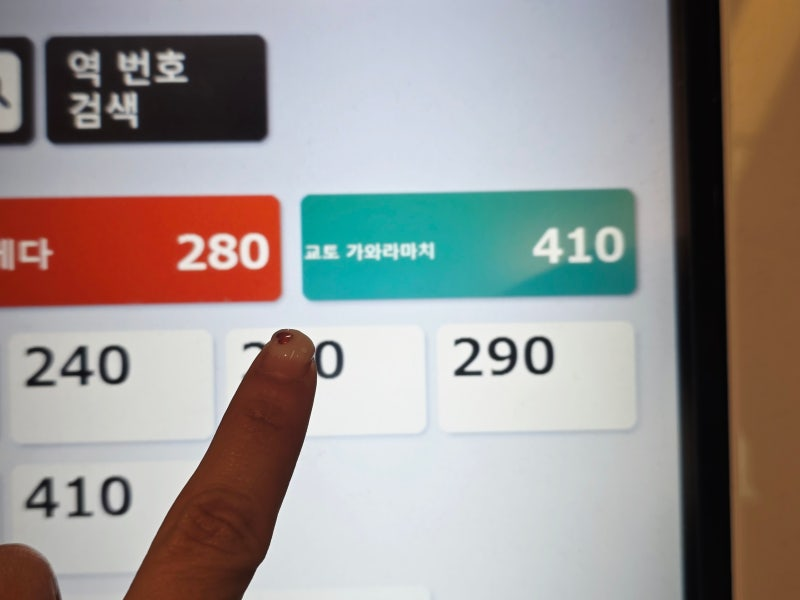
▲ 종이표 구매 시 한국어 화면에서 [교토 가와라마치 410엔] 선택
한큐 2단계
전광판에서 빨간색 [特急 (특급)] 확인하고 열차 탑승하기
개찰구를 통과해 1·2·3번 승강장 앞 대형 전광판을 올려다보세요.
한큐 교토선은 특급(特急) · 준특급(準特急) · 급행 · 보통 열차가 모두 같은 410엔입니다!
반드시 빨간색 글씨로 적힌 特急 Limited Exp. (특급) 또는 準特急 (준특급)京都河原町 (Kyoto-kawaramachi) 행 열차를 타세요. (보통 1번 승강장에서 10분마다 출발하며, 43분 만에 교토 종점까지 가장 빠르게 갑니다!)
우메다역이 출발 시발역이므로, 서두르지 마시고 다음 특급 열차 줄에 미리 서 계시면 일반 칸(1~3호차, 5~8호차)에서도 두 분이 나란히 앉아가실 수 있습니다.
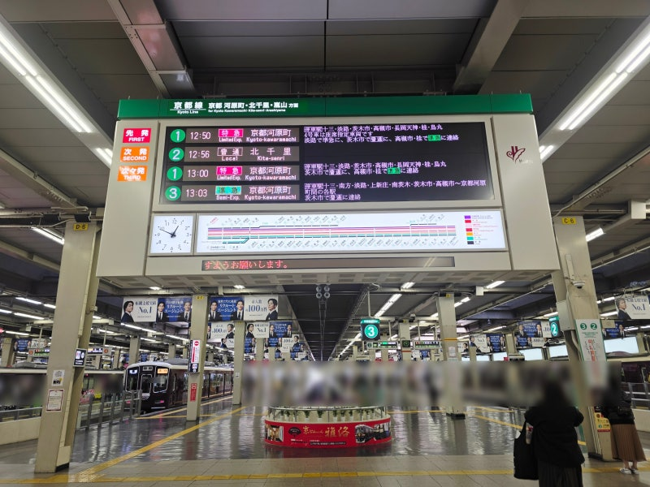
▲ 전광판에서 ①번 승강장 빨간색 [特急 京都河原町] 확인!
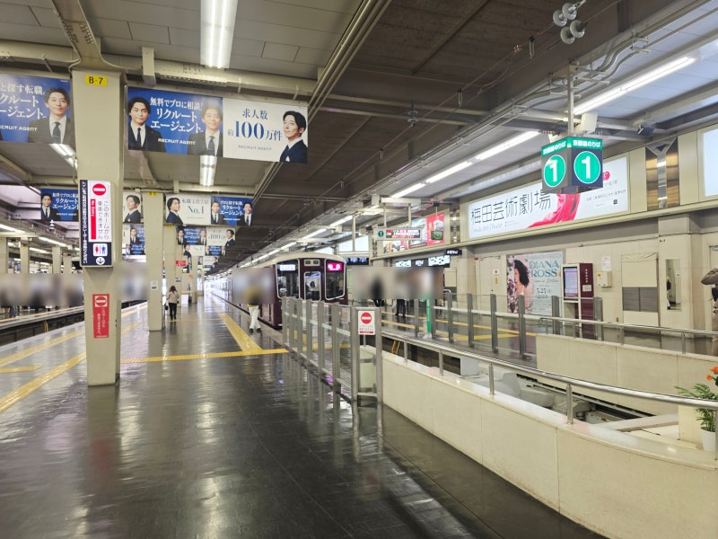
▲ 1번 승강장(초록색 ① 표시)에 서 있는 밤색 한큐 특급열차
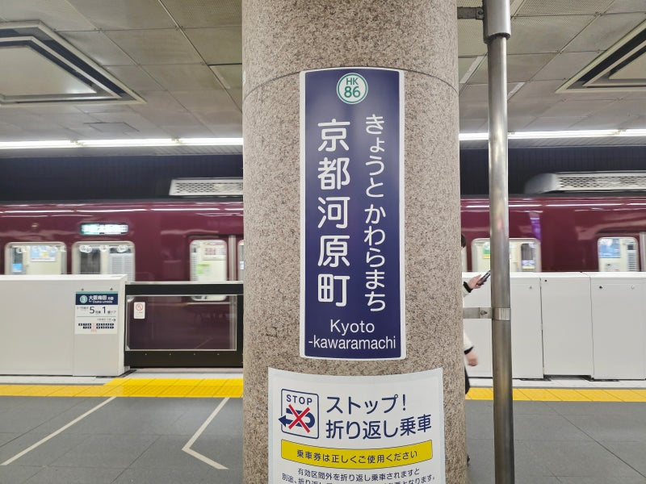
▲ 깔끔하고 고풍스러운 한큐 열차 일반석 내부 (410엔)
부모님 특별 꿀팁 ⭐
무조건 편하게 앉아가는 [4호차 PRiVACE (+500엔)] & 주말 명물 [교트레인 가라쿠]
부모님께서 줄 서서 기다리지 않고 KTX 특실처럼 편하게 가시려면 한큐 특급 4호차 PRiVACE(프리베이스)를 이용해 보세요!
💺 4호차 유료 좌석 지정 서비스 [PRiVACE (프리베이스)] (+500엔): 한큐 특급열차의 정중앙인 4호차(문 옆에 금색 P 로고)는 전 좌석 2×1 배열의 고급 리클라이닝 지정석입니다. 기본 운임(410엔) 외에 1인당 500엔(약 4,500원)만 추가하면 콘센트·무료 와이파이가 있는 푹신한 단독 좌석에 앉아 가실 수 있습니다. (스마트폰 웹사이트에서 회원가입 없이 신용카드로 즉시 예매하거나, 빈자리가 있으면 4호차 탑승 후 승무원에게 현금/교통카드로 500엔 결제도 가능합니다!)
🍁 주말·공휴일 보너스 관광열차 [교트레인 가라쿠 (京とれいん 雅洛)] (추가요금 0원!): 토·일·공휴일(하루 왕복 4~6회, 우메다 3번 승강장 출발)에는 열차 내부를 교토 전통 정원과 다다미 좌석으로 꾸민 명물 관광열차 교트레인 가라쿠가 운행합니다. 예약이나 추가 요금 없이 일반 요금 410엔 그대로 타실 수 있으니 주말에 시간이 맞으면 꼭 타보세요!
▲ 4호차 PRiVACE 좌석 (+500엔으로 KTX 특실급 편안함!)
▲ 주말·공휴일에 운행하는 관광열차 [교트레인 가라쿠] 외관
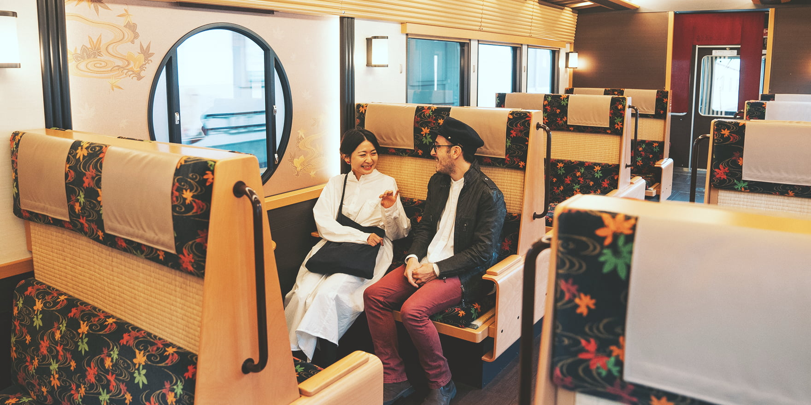
▲ 교트레인 가라쿠 내부 (추가요금 없이 410엔에 탑승!)
한큐 3단계 · 코스 A
[기온·청수사·니시키시장 코스] 종점 교토 가와라마치역 하차 & 택시 꿀팁
우메다에서 특급열차를 타면 약 43분 뒤 종점인 京都河原町 (교토 가와라마치역, HK-86)에 도착합니다. 종점이니 마음 편히 끝까지 타고 내리시면 됩니다!
기온거리 · 가모가와강 · 야사카신사 방면: 개찰구를 나와 [1A 또는 1B 출구]로 올라가 다리(시조대교)만 건너면 바로 교토 전통 거리인 기온(祇園)입니다. (도보 5분)
🚕 부모님 무릎 보호 최고 꿀팁 (청수사 택시 이동): 교토 시내버스는 관광객이 너무 많아 부모님께서 서서 가시기 힘듭니다. 가와라마치역 지상으로 나와 택시를 타시고 기사님께 "기요미즈데라, 고조자카 오네가이시마스(청수사 입구 부탁합니다)"라고 하시면 약 10분, 요금 1,000~1,300엔(약 1만 원)에 청수사 오르막길 입구까지 아주 편하게 모셔다줍니다!
▲ 한큐 교토선 종점인 [京都河原町 교토 가와라마치역 (HK-86)] 도착!
▲ 역 출구로 나오면 바로 시조 가와라마치 번화가와 기온거리로 이어집니다
한큐 3단계 · 코스 B
[아라시야마 대나무숲 코스] 가쓰라역(桂)에서 내려 1C 승강장으로 환승!
도게츠교와 치쿠린(대나무숲)이 있는 아라시야마로 바로 가실 때도 한큐전철(총 410엔, 약 50분)이 가장 편합니다.
① 가쓰라역(桂, Katsura) 하차: 우메다에서 한큐 특급열차를 타고 약 35분 달리면 종점 2정거장 전인 桂 (가쓰라역, HK-81)에 정차합니다. 여기서 내리세요.
② 1호 선(C 플랫폼) 아라시야마선 환승:절대 개찰구 밖으로 나가지 마시고, 에스컬레이터/엘리베이터를 타고 초록색 동그라미 ① Ⓒ 嵐山方面 (for Arashiyama) 표지판을 따라 1C 승강장으로 내려가세요.
③ 한큐 아라시야마역 도착 (3정거장, 7분): 1C 승강장에 서 있는 열차는 무조건 아라시야마행입니다! 타고 7분(3정거장)만 가면 종점인 한큐 아라시야마역에 도착하며, 역에서 걸어서 도게츠교 다리를 건너면 바로 대나무숲입니다.
🔄 저녁에 우메다로 돌아올 때: 한큐 아라시야마역에서 열차를 타고 가쓰라역에 내린 뒤, 파란색 간판 [④ ⑤ 大阪梅田 (for Osaka-umeda)] 승강장으로 건너가 특급열차를 타시면 우메다까지 한 번에 돌아옵니다!
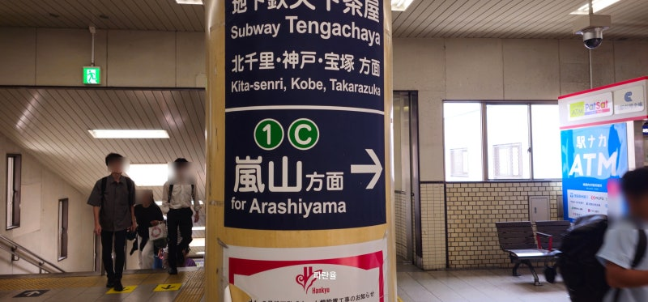
▲ 가쓰라역 하차 후 초록색 [① Ⓒ 嵐山方面 for Arashiyama] 화살표 따라 이동
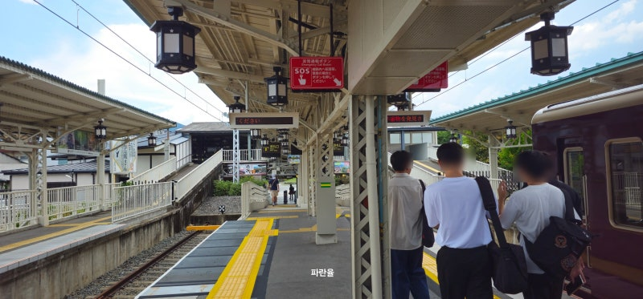
▲ 7분 만에 고즈넉한 종점 [한큐 아라시야마역] 도착!
▲ 돌아올 때는 가쓰라역에서 파란색 [④ ⑤ 大阪梅田 (오사카우메다)] 승강장으로!
🚅 4. [방법 2] JR 교토선 신쾌속 타고 가는 법 (교토역·여우신사 코스 ⚡)
교토역 · 교토타워를 구경하시거나 후시미이나리 타이샤(여우신사)를 첫 코스로 가실 때는 JR 오사카역에서 출발하는 JR 교토선 신쾌속(新快速, 29분 소요, 580엔)이 가장 빠릅니다!
⚠️ 안드로이드 부모님 필수 주의! JR 개찰구는 신용카드(트래블카드) 터치가 안 됩니다!
• 한큐전철과 달리 JR 서일본 개찰구는 트래블월렛·비자/마스터 카드 터치 결제를 지원하지 않습니다.
• 반드시 ① 실물 이코카(ICOCA) 교통카드를 파란색 IC 리더기에 찍으시거나, ② 개찰구 옆 JR 매표기(한국어 지원)에서 580엔 종이 승차권을 뽑아서 투입구에 넣으셔야 합니다!
JR 1단계
JR 오사카역 개찰구 통과 ➔ [7·8·9·10번 승강장 (교토 방면)] 올라가기
이비스 호텔에서 도보 6분 거리인 JR 오사카역(大阪駅)으로 이동합니다.
개찰구를 통과한 뒤 천장의 파란색 A JR京都線 (JR Kyoto Line)7 · 8 또는 9 · 10 (新大阪·高槻·京都 方面 for Shin-Osaka, Takatsuki, Kyoto) 에스컬레이터를 타고 승강장으로 올라가세요.
(참고: 아침 출퇴근 시간대 외의 낮 시간에는 주로 7·8번 승강장에서 출발하며, 아침 시간대에는 9·10번에서 출발하기도 하니 전광판의 승강장 번호를 확인하세요!)
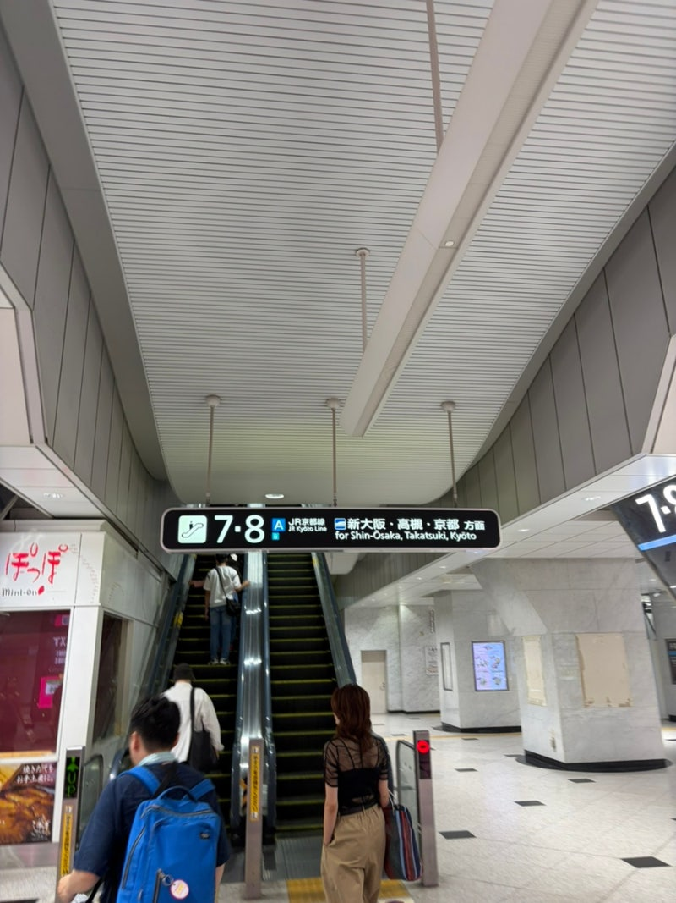
▲ JR 오사카역 개찰구 안쪽의 [7·8 JR교토선 신오사카·다카쓰키·교토 방면] 에스컬레이터
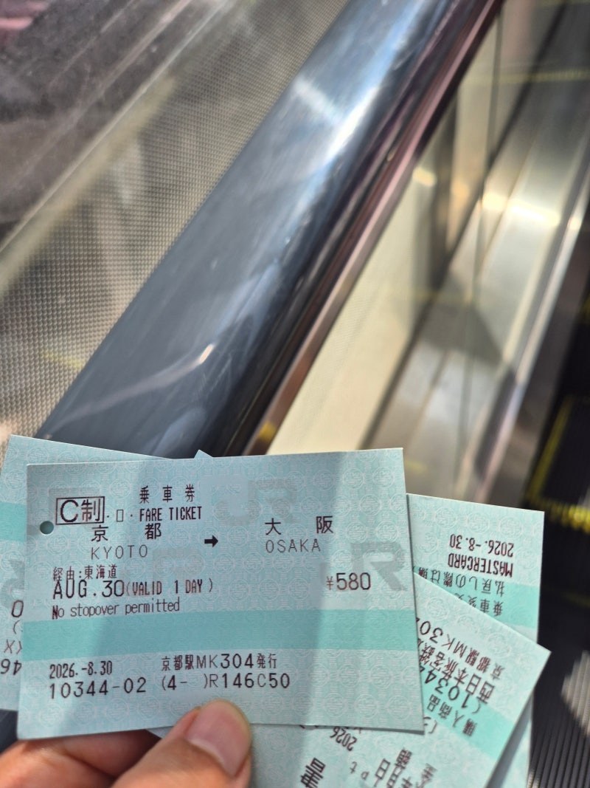
▲ 이코카가 없을 때는 매표기에서 뽑는 580엔 종이 승차권 (신용카드 결제 가능)
JR 2단계
파란색 [新快速 (신쾌속)] 탑승 ➔ 29분 만에 JR 교토역 도착 & 여우신사 환승
승강장 전광판에서 열차 종류를 꼭 확인하고 타세요!
무조건 파란색 新快速 Special Rapid (신쾌속) 탑승: 신쾌속을 타면 신오사카 ➔ 다카쓰키 ➔ 교토 딱 3정거장, 29분 만에 주파합니다! (주의: 노란색 '쾌속'이나 흰색 '보통'을 타면 정차역이 많아 45~50분 걸립니다.)
⛩️ 후시미이나리 타이샤(여우신사) 바로 가는 법: JR 교토역에 내린 뒤 개찰구 밖으로 나가지 마시고, 구내 통로를 따라 갈색 간판 D JR奈良線 (JR 나라선 · 8·9·10번 승강장)으로 이동해 보통(Local) 열차를 타세요! 딱 2정거장(5분, +150엔)만 가면 여우신사 바로 코앞인 JR 이나리역(稲荷駅)에 도착합니다.
🔄 저녁에 JR 교토역에서 오사카(우메다)로 돌아올 때: JR 교토역 개찰구로 들어와 파란색 간판 4 · 5번 승강장 (JR京都線 新大阪·大阪·三ノ宮 方面)으로 내려가 파란색 [新快速 (신쾌속) 오사카·히메지행]을 타시면 29분 만에 JR 오사카역으로 돌아옵니다!
▲ 파란색 띠가 그려진 JR 교토선 [신쾌속(新快速)] 열차 외관
▲ 29분 만에 도착하는 웅장한 유리 건물 [JR 교토역]
▲ 돌아올 때는 교토역 [4·5번 승강장 (신오사카·오사카 방면)]으로!
📌 역무원이나 택시 기사님께 바로 보여주실 수 있는 일본어 문장
①「河原町(かわらまち)行きの阪急特急(はんきゅうとっきゅう)は何番線(なんばんせん)ですか？」
👉 (한큐역에서) "가와라마치행 한큐 특급열차는 몇 번 승강장인가요?"
②「清水寺(きよみずでら)の入口(いりぐち)・五条坂(ごじょうざか)までお願いします。」
👉 (교토 택시에서) "청수사(기요미즈데라) 입구·고조자카까지 부탁합니다."
⛩️ 5. [청수사 완벽 가이드] 걸어서 산책 코스 vs 택시·버스 가는 법 총정리
교토 여행의 하이라이트인 청수사(기요미즈데라 · 清水寺)는 ① 교토 핵심 명소를 구경하며 설렁설렁 걸어 올라가는 산책 코스와 ② 택시·버스로 올라간 뒤 내리막길로 걸어 내려오는 코스 모두 매력이 뛰어납니다! 당일 날씨와 부모님 컨디션에 맞춰 아래 3가지 방법 중 골라보세요.
💡 부모님 취향·컨디션별 청수사 가는 방법 3가지 한눈에 비교
• 방법 A [걸어서 산책하며 가는 법 🚶 · 교토 감성 100% 왕도 코스]:한큐 교토 가와라마치역(1A·1B 출구)에서 출발해 시조대교(가모가와강) ➔ 기온거리 ➔ 야사카신사 ➔ 호칸지(야사카의 탑) ➔ 니넨자카·산넨자카 ➔ 청수사까지 구경하며 걸어가는 코스! (순수 도보 약 30~35분 / 만원 버스 대기 없이 교토 최고 명소를 일직선으로 모두 만납니다!)
• 방법 B [택시로 오르막길 패스 🚕 · 부모님 무릎 보호 1순위]:가와라마치역(약 10분, 1,200~1,500엔) 또는 JR 교토역(약 15분, 1,500~1,800엔)에서 택시로 "차완자카(茶わん坂) 상단"까지 올라가 정문 코앞에서 내린 뒤, 구경 후 내리막길로 걸어 내려오는 코스!
• 방법 C [가성비 시내버스 이동 🚌 · 편도 230엔]:가와라마치역 6번 출구 앞 [207번 버스] 또는 JR 교토역 D2 승강장 [206·86번 버스]를 타고 [기요미즈미치]·[고조자카] 정류장에서 내려 언덕길을 10~15분 걸어 올라가는 코스!
교토 시내버스는 줄이 길고 차가 막히지만, 가와라마치역에서 청수사까지 걸어가는 길(약 2km, 순수 도보 30~35분)은 지루한 구간이 전혀 없이 교토에서 가장 유명한 관광 명소들이 차례대로 이어지는 최고의 황금 산책로입니다!
① [출발 · 5분] 한큐 교토 가와라마치역 1A 또는 1B 출구 ➔ 시조대교(四条大橋) 건너기: 개찰구를 나와 1A·1B 출구로 올라오면 바로 눈앞에 교토의 상징인 가모가와강(鴨川)이 펼쳐집니다. 시원한 강바람을 맞으며 시조대교를 건너세요!
② [기온 산책 · 8분] 기온 거리(四条通) 직진 ➔ 붉은 정문 야사카신사(八坂神社) 도착: 다리를 건너 양옆으로 전통 상점과 화과자 가게가 늘어선 기온 거리를 따라 똑바로 직진하면, 길 정면 끝에 화려한 주홍빛 누문인 야사카신사 서문이 나타납니다. (무료 개방 · 24시간 운영)
③ [전통 돌담길 · 10분] 야사카신사 남문 통과 ➔ 네네노미치 ➔ 호칸지(야사카의 탑): 야사카신사 안으로 들어가 본전을 둘러보신 뒤 오른쪽(남문)으로 나와 평평하고 고즈넉한 돌담길인 네네노미치(ねねの道)를 따라 걸어가면, 전통 가옥 사이로 우뚝 솟은 5층 목탑인 호칸지(야사카의 탑) 포토존이 나옵니다!
④ [전통 언덕길 · 12분] 니넨자카(다다미 스타벅스) ➔ 산넨자카 ➔ 청수사 도착: 다다미 스타벅스가 있는 니넨자카(二年坂)와 아기자기한 기념품·말차 디저트 가게가 가득한 산넨자카(三年坂) 돌계단을 구경하며 천천히 올라가면 붉은 정문인 청수사 인왕문에 도착합니다! (💡 체력 안배 꿀팁: 갈 때 이렇게 구경하며 걸어 올라가셨다면, 청수사 관람 후 돌아오실 때는 언덕 아래에서 207번 버스나 택시를 타고 가와라마치역으로 편하게 복귀하셔도 좋습니다!)
▲ ① 가와라마치역 1A·1B 출구 앞 [시조대교(가모가와강)] 건너기
▲ ② 기온 거리를 쭉 직진하면 정면에 나오는 [야사카신사] 붉은 정문
▲ ③·④ [호칸지(야사카의 탑)]를 지나 니넨자카·산넨자카로 산책!
청수사 방법 B 🚕
[가장 편한 택시 이동] 가파른 오르막길 패스! "차완자카(茶わん坂)" 상단에서 하차하기
오르막길을 걷는 대신 갈 때는 택시로 청수사 꼭대기 코앞까지 편하게 올라가고, 구경 후 내리막길로만 산책하며 내려오고 싶으실 때 가장 추천하는 방법입니다!
어디서 타나요? 한큐 교토 가와라마치역 지상으로 나오면 빈 택시가 줄지어 서 있습니다. (요금 약 1,200~1,500엔, 10분 소요 / JR 교토역 중앙출구 택시승강장에서는 약 1,500~1,800엔, 15분 소요)
핵심 포인트 (차완자카 길 요청): 사람들이 몰리는 메인 상점가(마쓰바라도리) 대신 바로 옆 한적한 찻사발 골목인 茶わん坂 (차완자카)로 올라가 달라고 기사님께 아래 일본어 박스를 보여주세요! 차량 진입이 허용되는 가장 높은 곳(인왕문 도보 2~3분 거리)까지 쏙 올려다 줍니다.
👉 "청수사(기요미즈데라)의 차완자카 위쪽, 차로 갈 수 있는 가장 가까운 곳까지 부탁합니다."
청수사 방법 C 🚌
[시내버스 이동 (230엔)] 가와라마치역 6번 출구 [207번] / 교토역 D2 승강장 [206·86번]
버스로 가실 때는 아래 출구와 버스 번호만 기억하세요! (※ 교토 시내버스는 뒷문으로 타서 ➔ 내릴 때 앞문 요금함에 실물 이코카(ICOCA)를 찍거나 현금 230엔을 냅니다. 신용카드 터치는 불가!)
① 한큐 [교토 가와라마치역]에서 버스 탈 때 (약 10분 소요): 개찰구를 나와 노란색 6番出口 (6번 출구 · 市バスのりば 시내버스 타는 곳) 계단으로 올라오세요. 출구 바로 앞 [시조 가와라마치 E 승강장]에서 파란색/초록색 207번 버스 (清水寺·東福寺 방면)를 타고 3~4정거장 뒤인 清水道 (기요미즈미치) 또는 五条坂 (고조자카)에서 내리세요!
② [JR 교토역]에서 버스 탈 때 (약 15분 소요): JR 교토역 중앙출구(교토타워 방향)로 나와 오른쪽 버스 터미널 D2 승강장에서 206번 또는 86번 버스를 타고 [고조자카(五条坂)] 또는 [기요미즈미치(清水道)]에서 내리세요.
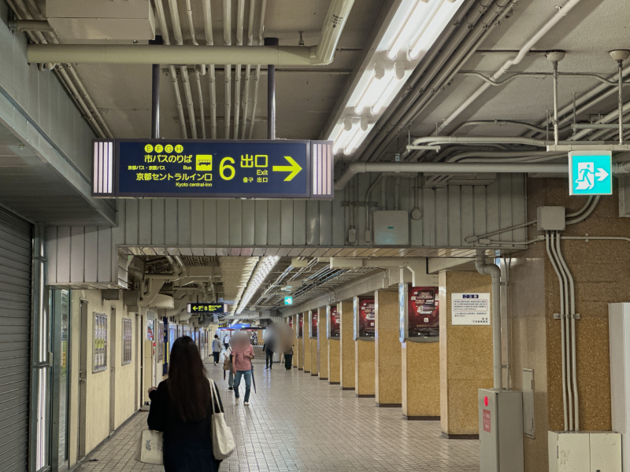
▲ 가와라마치역 지하에서 [6番出口 市バスのりば(시내버스)] 확인!
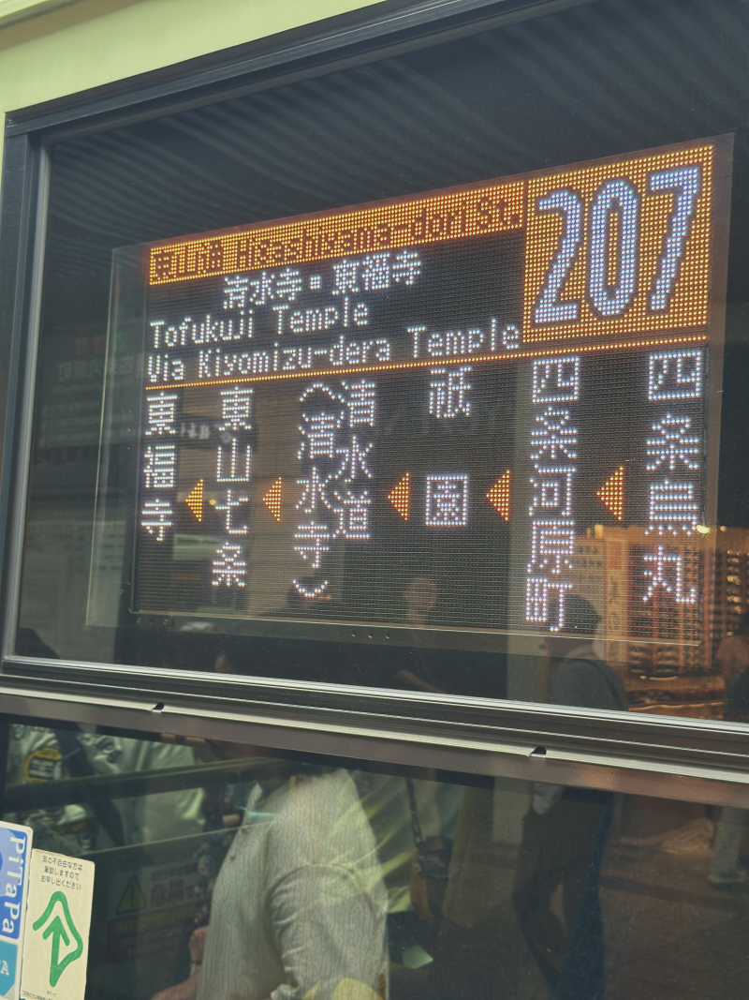
▲ 6번 출구 앞에서 [207번 (清水寺 기요미즈데라 경유)] 버스 탑승
▲ 초록색 교토 시내버스 (뒷문 승차 ➔ 앞문 하차 시 230엔 이코카/현금 결제)
청수사 관람 ⛩️
청수사 경내 핵심 코스와 입장권 구매 (성인 500엔 · 현금 준비!)
붉은 정문인 인왕문(仁王門)과 삼중탑(三重塔)에서 기념사진을 찍으신 뒤 매표소로 이동합니다.
🎟️ 매표소 입장권 구매 (성인 1인 500엔): 청수사 매표소는 현금 결제(500엔 동전/1,000엔 지폐)만 가능하니 미리 잔돈을 챙겨두세요! 예쁜 사계절 책갈피 모양의 종이 입장권을 줍니다.
🏯 기요미즈의 무대(본당) ➔ 오토와 폭포: 못을 하나도 쓰지 않고 기둥 139개로 절벽 위에 세운 본당 무대에서 교토 시내와 교토타워 전망을 감상하시고, 맞은편 전망대(오쿠노인)에서 본당이 한눈에 나오는 대표 인생샷을 남기세요! 그다음 계단(또는 왼쪽 완만한 경사로)을 내려와 세 줄기 약수가 흐르는 오토와 폭포(音羽の滝)와 연못을 지나 출구로 나옵니다. (경내 관람 약 40~50분 소요)
청수사 구경을 마치고 내려오실 때는 차를 타지 마시고, 옛 교토 정취가 그대로 살아있는 내리막길 전통 거리를 천천히 걸어 내려오세요! 계속 내리막길이라 걷기 수월하고 볼거리·간식거리가 가득합니다.
① 청수사 정문 앞 상점가(마쓰바라도리): 인왕문을 나와 내리막길을 따라 3분 정도 내려오며 말차 슈크림·당고·아이스크림 간식을 맛보세요.
② 산넨자카(三年坂 · 산네이자카) 우회전 진입: 오른쪽에 있는 [칠미가(七味家) 본포] 전통 고춧가루 가게 코너에서 오른쪽 돌계단 내리막길로 꺾어 내려가면 교토에서 가장 아름다운 전통 골목인 산넨자카입니다!
③ 니넨자카(二年坂) & 다다미 스타벅스: 산넨자카를 내려오면 자연스럽게 니넨자카와 5층 목조탑인 호칸지(야사카의 탑) 골목으로 이어집니다. 100년 넘은 전통 가옥을 개조한 세계 유일의 [스타벅스 교토 니넨자카 야사카차야점(다다미 스타벅스)]에서 잠시 커피 한 잔 드시며 다리를 쉬어가세요!
④ 야사카신사 ➔ 기온거리 ➔ 교토 가와라마치역 복귀: 니넨자카에서 평지를 따라 걸어 나오면 붉은 정문이 멋진 야사카신사와 기온거리가 나오며, 다리(시조대교) 하나만 건너면 바로 한큐 교토 가와라마치역에 도착해 우메다 숙소로 편하게 돌아오실 수 있습니다! (하산 산책 코스 총 도보 약 30~40분)
▲ 위에서 아래로 천천히 걸어 내려오는 [산넨자카(三年坂)] 전통 골목
▲ 니넨자카의 명물! 전통 가옥을 개조한 [다다미 스타벅스] 외관
▲ 고즈넉한 목조탑을 배경으로 산책하며 기온거리·가와라마치역까지 이동!
🔄 6. [복귀 완벽 가이드] 저녁에 교토 ➔ 오사카 우메다(이비스 호텔) 돌아오는 법
교토 관광과 저녁 식사를 마치고 숙소인 이비스 오사카 우메다로 돌아오실 때, 마지막으로 계신 위치에 맞춰 아래 한큐전철 또는 JR 신쾌속을 타시면 환승 없이 우메다까지 한 번에 돌아옵니다!
복귀 방법 1 ⭐
[청수사·기온·니시키시장에서 복귀] 한큐 교토 가와라마치역 ➔ 오사카우메다역 (410엔 · 43분)
청수사·산넨자카·기온거리·야사카신사·니시키시장·폰토초 주변에서 저녁을 드셨다면 무조건 한큐 교토 가와라마치역(京都河原町駅)에서 출발하세요!
① 지하 입구 찾기 & 개찰구 통과: 시조대교를 건너자마자 보이는 阪急電車 京都河原町駅 (한큐 교토 가와라마치역) 지하 계단(1A·1B 출입구 또는 다카시마야 백화점 지하)으로 내려가 개찰구를 찍고 들어가세요. (아침과 동일하게 실물 이코카는 파란 IC 패드 / 트래블카드·신용카드는 은색 컨택리스 단말기 개찰구 터치 / 종이표는 매표기 410엔)
② 1·2·3호 선 전광판에서 빨간색 特急 (특급) 大阪梅田 탑승: 가와라마치역은 출발 시발역이라 반대 방향 열차가 아예 없습니다! 전광판에서 가장 빨리 출발하는 빨간색 [特急 (특급) 또는 準特急 (준특급) 大阪梅田(오사카우메다)행] 승강장 번호(주로 1호 선 또는 3호 선)를 보고 타시면 43분 뒤 종점인 한큐 오사카우메다역에 도착합니다.
💺 저녁 복귀길 부모님 꿀팁 (무조건 앉아 오기): 하루 종일 걸어서 다리가 피곤하실 때는 ① 바로 앞 열차를 보내고 다음 특급 줄 맨 앞에 미리 서서 일반석에 앉으시거나, ② 4호차 유료 지정석 [PRiVACE (+500엔)]을 타시면 우메다까지 푹 쉬면서 오실 수 있습니다!
▲ 시조대교 바로 옆 [阪急電車 京都河原町駅 (한큐 가와라마치역)] 입구
▲ 가와라마치역 중앙개찰구 통과 후 정면 전광판 확인!
▲ 시발역인 1·2·3호 선에서 빨간색 [特急 大阪梅田(오사카우메다)행] 탑승!
복귀 방법 2 & 숙소 복귀
[아라시야마 / JR 교토역에서 복귀] & 우메다 도착 후 이비스 호텔 찾아가기
아라시야마나 JR 교토역(교토타워·여우신사)에서 바로 돌아오실 때와 우메다 도착 후 호텔 복귀 동선입니다.
🎍 아라시야마에서 복귀할 때 (한큐 410엔):한큐 아라시야마역에서 열차를 타고 3정거장(7분) 뒤 종점인 가쓰라역(桂)에 내립니다. 개찰구로 나가지 마시고 파란색 간판 ④ ⑤ 大阪梅田 (오사카우메다 방면) 승강장으로 건너가 빨간색 [特急 (특급) 오사카우메다행]을 타세요!
🚅 JR 교토역에서 복귀할 때 (JR 580엔 · 29분):JR 교토역 중앙개찰구(中央口)로 들어가(실물 이코카 또는 580엔 종이표 · 신용카드 터치 불가) 파란색 간판 4 · 5번 승강장 (JR京都線 新大阪·大阪·三ノ宮·姫路 方面)으로 내려갑니다. 파란색 新快速 Special Rapid (신쾌속)(행선지가 히메지·아보시·오사카 등 무엇이든 신쾌속이면 무조건 정차!)을 타면 딱 3정거장(29분) 뒤 [JR 오사카역]에 도착합니다!
🏨 우메다 도착 후 [이비스 오사카 우메다] 밤길 안 헤매는 법 (도보 5분):
- 지상으로 갈 때: 역 밖으로 나와 밤하늘에 빨간 대관람차가 빛나는 [HEP FIVE(헵파이브)] 건물을 찾으세요! 헵파이브 앞을 지나 큰길(오우기마치도리) 오른쪽으로 1분만 걸어가면 노란 간판의 이비스 오사카 우메다 호텔입니다.
- 지하상가(화이티 우메다)로 갈 때: 지하도에서 Whity うめだ (화이티 우메다) · 東梅田 표지판을 따라가 [7-72번 출구]로 올라가면 바로 호텔 지하 1층 입구와 연결됩니다!
▲ 아라시야마 복귀 시: 가쓰라역 파란색 [④ ⑤ 大阪梅田] 승강장으로 환승!
▲ JR 교토역 복귀 시: [JR線のりば 中央口(중앙개찰구)] 통과
▲ JR 교토역 [4·5번 승강장 (신오사카·오사카 방면)]에서 신쾌속 탑승!
🎬 7. 출발 전 눈으로 미리 보는 추천 유튜브 영상 8선 (청수사 포함!)
실제 우메다역에서 한큐전철·JR을 타고 교토(가와라마치·청수사·아라시야마·교토역)까지 가는 동선을 1인칭 시점으로 찍은 최신 한국어 영상들입니다. 제목이나 사진을 누르시면 유튜브로 연결됩니다!